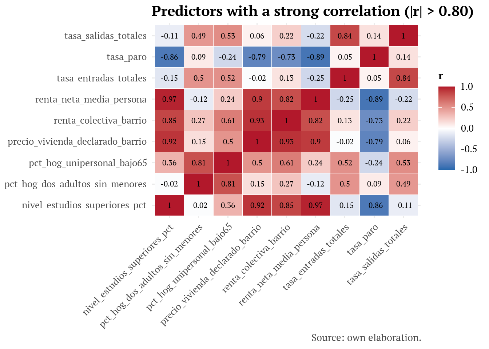

library(tidyverse)
library(naniar)
library(sf)
library(patchwork)
library(scales)
library(viridisLite)
library(stargazer)
library(randomForest)
library(glmnet)
library(xgboost)
library(psych)
library(fastshap)
library(ggbeeswarm)
library(factoextra)Data Analysis
A Predictive Model of Gentrification in Madrid Neighbourhoods
1 Set-up
1.1 Chart and table aesthetics
The aesthetic defined here is reused throughout the rest of the project.
# font definition
library(showtext)Cargando paquete requerido: sysfontsCargando paquete requerido: showtextdbfont_add_google("PT Serif", "serif_tfm")
showtext_auto()
showtext_opts(dpi = 300) # so the font size renders correctly when exporting to PNG/PDF
knitr::opts_chunk$set(fig.showtext = TRUE)
options(scipen = 999)
# theme for non-spatial charts
tema_tfm <- function(base_size = 12) {
theme_minimal(base_size = base_size, base_family = "serif_tfm") +
theme(
plot.title = element_text(face = "bold", size = base_size + 3, margin = ggplot2::margin(b = 4)),
plot.subtitle = element_text(size = base_size - 1, color = "grey35", margin = ggplot2::margin(b = 8)),
plot.caption = element_text(size = base_size - 2, color = "grey30", hjust = 1),
strip.text = element_text(face = "bold", size = base_size, color = "grey20"),
strip.background = element_blank(),
panel.grid.minor = element_blank(),
legend.title = element_text(face = "bold", size = base_size - 1),
axis.title = element_text(size = base_size - 1))
}
theme_set(tema_tfm())
# color palette
paleta_divergente <- c("#2166ac", "#f7f7f7", "#b2182b")
# color scale for level maps
escala_mapa_nivel <- function(name, ...) {
scale_fill_viridis_c(name = name, option = "mako", direction = -1, na.value = "grey90", ...)
}
# maps theme
tema_mapa_tfm <- function(base_size = 11) {
theme_light(base_size = base_size, base_family = "serif_tfm") +
theme(
axis.text = element_blank(), axis.ticks = element_blank(), axis.title = element_blank(),
panel.grid.major = element_line(color = "grey85", linewidth = 0.25),
panel.grid.minor = element_blank(),
panel.border = element_blank(),
strip.background = element_blank(),
strip.text = element_text(face = "bold", size = base_size),
plot.title = element_text(face = "bold", size = base_size + 4),
plot.subtitle = element_text(size = base_size, color = "grey35"),
plot.caption = element_text(size = base_size - 1, color = "grey30", hjust = 1),
legend.position = "right")
}
# stargazer for tables
tabla_tfm <- function(df, titulo = "", digitos = 3, resumir = FALSE,
formato = "html", ...) {
stargazer(as.data.frame(df), type = formato, summary = resumir, rownames = FALSE,
title = titulo, digits = digitos, ...)
}2 Construction of the gentrification index
3 Identification of NA by index indicator
The NA values of the index indicators are reviewed on dataset_modelado.csv.
dataset_modelado <- read_csv("../data/processed/dataset_modelado.csv", show_col_types = FALSE)
etiquetas_predictores <- tribble(
~predictor, ~etiqueta,
"pct_pob_25_39", "% population 25-39 years old",
"pct_extranjeros_ue_ocde", "% EU/OECD foreigners",
"nivel_estudios_superiores_pct", "% higher education",
"renta_neta_media_persona", "Average net income (€/person)",
"pct_hog_unipersonal_bajo65", "% single-person households <65",
"precio_vivienda_declarado_barrio", "Housing price (€/m²)",
"pct_hog_monoparental", "% single-parent households",
"pct_hog_dos_adultos_sin_menores", "% households, 2 adults without minors",
"poblacion_total_barrio", "Total population",
"tasa_transacciones_vivienda", "Housing transaction rate",
"densidad", "Density (inhab./Ha)",
"tamano_hogar", "Average household size",
"envejecimiento", "% ageing",
"sobreenvejecimiento", "% over-ageing",
"pct_uso_vivienda", "% housing-use premises",
"n_locales_activos_total", "No. of active premises",
"pct_comercio_menor", "% retail trade",
"pct_turismo_alojamiento", "% tourism and lodging",
"pct_inmobiliarias", "% real-estate agencies",
"pct_arte_recreo_ocio", "% arts, recreation and leisure",
"pct_bares_restaurantes", "% bars and restaurants",
"tasa_entradas_totales", "Inflow rate (residential churn)",
"tasa_salidas_totales", "Outflow rate (residential churn)",
"intensidad_inversion_real_distrito", "Public investment (€/inhab., district)",
"share_gasto_real_urbanismo", "% urban-planning spend (district)",
"share_gasto_real_mantenimiento_urbano", "% urban-maintenance spend (district)",
"share_gasto_real_medio_ambiente", "% environment spend (district)",
"share_gasto_real_cultura", "% culture spend (district)",
"pct_poblacion_idh_alto_distrito", "% population from high-HDI countries (district)",
"zonas_verdes_significativas_m2_per_capita_distrito", "Green spaces (m²/inhab., district)",
"n_estaciones_metro", "No. of metro stations",
"distancia_centro_lineal_m", "Distance to the centre (m)",
"tasa_paro", "Unemployment rate",
"renta_colectiva_barrio", "Rental price (€/m²/month)",
"paradas_red_centro", "Metro stops to the centre",
"sin_estacion_propia", "No metro station of its own")
indicadores_indice <- c(
"pct_pob_25_39", # Age
"pct_extranjeros_ue_ocde", # Population origin
"nivel_estudios_superiores_pct", # Educational level
"renta_neta_media_persona", # Income
"pct_hog_unipersonal_bajo65", # Household composition
"precio_vivienda_declarado_barrio" # Housing purchase price
)
# count and percentage of NA by indicator
dataset_modelado %>%
summarise(across(all_of(indicadores_indice), ~ sum(is.na(.x)))) %>% # sums the number of NAs
pivot_longer(everything(), names_to = "indicador", values_to = "n_na") %>%
mutate(pct_na = round(100 * n_na / nrow(dataset_modelado), 1)) %>% # computes the % of NA
arrange(desc(n_na))# A tibble: 6 × 3
indicador n_na pct_na
<chr> <int> <dbl>
1 precio_vivienda_declarado_barrio 25 2.7
2 pct_pob_25_39 6 0.7
3 pct_extranjeros_ue_ocde 5 0.5
4 nivel_estudios_superiores_pct 3 0.3
5 pct_hog_unipersonal_bajo65 3 0.3
6 renta_neta_media_persona 0 0 # NA chart
dataset_modelado %>%
select(all_of(indicadores_indice)) %>%
gg_miss_var(show_pct = TRUE) +
theme_minimal() +
labs(title = "Percentage of NA by indicator",
y = "% NA")
# detail of which specific neighbourhood-year has NA in any of the indicators
dataset_modelado %>%
filter(if_any(all_of(indicadores_indice), is.na)) %>%
select(anio, barrio_nombre, codigo_barrio, all_of(indicadores_indice)) %>%
arrange(codigo_barrio, anio)# A tibble: 32 × 9
anio barrio_nombre codigo_barrio pct_pob_25_39 pct_extranjeros_ue_ocde
<dbl> <chr> <chr> <dbl> <dbl>
1 2023 Acacias 022 0.211 NA
2 2023 Legazpi 024 0.200 NA
3 2017 Atocha 027 0.171 0.0207
4 2018 Atocha 027 0.173 0.0258
5 2019 Atocha 027 0.166 0.0255
6 2022 Atocha 027 0.210 0.0519
7 2023 Atocha 027 0.225 0.0761
8 2019 El Pardo 081 0.211 0.0176
9 2020 El Pardo 081 0.201 0.0145
10 2023 El Plantío 096 0.140 0.0551
# ℹ 22 more rows
# ℹ 4 more variables: nivel_estudios_superiores_pct <dbl>,
# renta_neta_media_persona <dbl>, pct_hog_unipersonal_bajo65 <dbl>,
# precio_vivienda_declarado_barrio <dbl>EXPLANATION OF THE ORIGIN OF THE NA VALUES
pct_pob_25_39: 6 NA (0.7%) - 3 are the neighbourhoods without their own entity in 2017 (Ensanche de Vallecas, Valderrivas, El Cañaveral); the other 3 are the manual correction of 2018 in Vicálvaro (Casco Histórico de Vicálvaro, Valdebernardo, Valderrivas), where the 2018 population came with extreme values of origin and the age bracket was left as NA for lack of a reliable basis for allocation.
pct_extranjeros_ue_ocde: 5 NA (0.5%) - 3 are the neighbourhoods without their own entity in 2017: the other 2 are the Acacias/Legazpi 2023 correction, since they are migrants with unreliable data in the indicator panel.
nivel_estudios_superiores_pct: 3 NA (0.3%) - 3 are the neighbourhoods without their own entity in 2017.
pct_hog_unipersonal_bajo65: 3 NA (0.3%) - 3 are the neighbourhoods without their own entity in 2017.
renta_neta_media_persona: 0 NA - uses the complete 131 neighbourhoods since 2017.
precio_vivienda_declarado_barrio: 25 NA (2.7%) - due to censoring for statistical confidentiality (<15 transactions/year). Almost all concentrated in Aeropuerto (suppressed in every year) and Atocha (suppressed for 5 years). One of those cases is El Cañaveral 2017, which, by appearing (due to the edition date) as a newly-created neighbourhood, has insufficient real-estate activity to publish it.
3.1 Treatment of the NA values (indicators)
- NA due to statistical confidentiality and to specific corrections (Vicálvaro 2018, Acacias/Legazpi 2023): the methodology of López-Gay et al. (2019, p.8) is followed: “There is some information gap in the smallest neighbourhoods, to which we have assigned the prices of the bordering neighbourhoods, or in their absence, the district’s average prices”. That is, the average of the bordering neighbourhoods is computed first, with the district average as a backup only when no bordering neighbourhood has valid data that year.
Bordering neighbourhoods are those that share a real border with the neighbourhood. The same boundary-vintage split as Source 16 of 01_union_datos.qmd is used: the Barrios2017 shapefile for years 2017-2020, Barrios2021 for 2021-2023.
A bordering neighbourhood that has NA is excluded from the calculation; for this same reason, Valderrivas 2018 is a special case. Its only two neighbours (Casco Histórico de Vicálvaro, Valdebernardo) are also NA that year, and district 19 only has one neighbourhood with genuine data (El Cañaveral), so the average is not reliable. It is resolved as a documented exception using the average of the 3 nearest real neighbourhoods by polygon distance (Santa Eugenia “182”, Rosas “205”, El Cañaveral “194”): the cutoff at 3 neighbourhoods follows the natural jump below 1000m distance. The intention is not to use already-estimated values as valid data to avoid chaining estimations.
- NA due to neighbourhoods absent in 2017: these 3 neighbourhoods (Ensanche de Vallecas/Valderrivas/El Cañaveral) will be excluded from Window A, which includes 2017, since they only have 1 or 2 of the 6 dimensions that make up the index. The NA-substitution treatment used for the rest of the cases is not applied to them.
# reads the 2017 and 2021 geographic shapefiles
barrios_shp_2017 <- st_read("../data/raw/geometria_barrios_extracted/Barrios2017/Barrios.shp",
options = "ENCODING=CP1252", quiet = TRUE)
st_crs(barrios_shp_2017) <- 25830 # ETRS_1989_UTM_Zone_30N
barrios_shp_2021 <- st_read("../data/raw/geometria_barrios_extracted/Barrios2021/Barrios_20210712.shp",
quiet = TRUE)
st_crs(barrios_shp_2021) <- 25830 # ETRS_1989_UTM_Zone_30N
# builds a real adjacency table (sharing a border) for the 131 neighbourhoods in each boundary vintage
calcular_vecinos <- function(shp, campo_codigo) {
codigos <- shp[[campo_codigo]]
map_dfr(seq_along(codigos), function(i) {
toca <- st_touches(shp$geometry[i], shp$geometry)[[1]] # for each neighbourhood i, st_touches returns the indices of every polygon that shares a border
toca <- setdiff(toca, i) # never the neighbourhood itself
if (length(toca) == 0) return(tibble(codigo_barrio = character(), vecino = character()))
tibble(codigo_barrio = codigos[i], vecino = codigos[toca])
})}
vecinos_2017 <- calcular_vecinos(barrios_shp_2017, "CODBAR") %>% mutate(vigencia = "2017") # 2017 adjacency table
vecinos_2021 <- calcular_vecinos(barrios_shp_2021, "COD_BAR") %>% mutate(vigencia = "2021") # 2021 adjacency table
vecinos_todos <- bind_rows(vecinos_2017, vecinos_2021)
# checks on bordering neighbours
stopifnot(n_distinct(vecinos_2017$codigo_barrio) <= 131)
stopifnot(n_distinct(vecinos_2021$codigo_barrio) <= 131)
# checks whether there are neighbourhoods with no touching neighbour in each boundary vintage
aislados_2017 <- setdiff(barrios_shp_2017$CODBAR, unique(vecinos_2017$codigo_barrio))
aislados_2021 <- setdiff(barrios_shp_2021$COD_BAR, unique(vecinos_2021$codigo_barrio))
aislados_2017 # nonecharacter(0)aislados_2021 # "213" - Casco Histórico de Barajas[1] "213"# long format, to treat all indicators more easily
tabla_larga <- dataset_modelado %>%
select(anio, distrito_num, codigo_barrio, all_of(indicadores_indice)) %>%
pivot_longer(all_of(indicadores_indice), names_to = "indicador", values_to = "valor")
barrios_sin_entidad_2017 <- c("183", "193", "194") # neighbourhoods absent in 2017
tabla_larga <- tabla_larga %>%
mutate(
vigencia = if_else(anio <= 2020, "2017", "2021"), # same split as Source 16: 2017-2020 / 2021-2023
excluir_de_sustitucion = anio == 2017 & codigo_barrio %in% barrios_sin_entidad_2017) # excludes from substitution the neighbourhoods absent in 2017
# checks the number of NA
na_barrios_sin_entidad <- tabla_larga %>%
filter(excluir_de_sustitucion, is.na(valor))
n_na_esperado_por_barrio <- c("183" = 4, "193" = 4, "194" = 5)
stopifnot(nrow(na_barrios_sin_entidad) == sum(n_na_esperado_por_barrio))
# checks that those neighbourhoods have NA in the specific expected indicators
stopifnot(setequal(unique(na_barrios_sin_entidad$indicador),
c("pct_pob_25_39", "pct_extranjeros_ue_ocde",
"nivel_estudios_superiores_pct", "pct_hog_unipersonal_bajo65",
"precio_vivienda_declarado_barrio")))
# contains only the cells that were never NA. Every Tier uses it as the source of values to average, so as not to chain estimations.
valores_originales <- tabla_larga %>%
filter(!is.na(valor)) %>%
select(indicador, anio, vigencia, distrito_num, codigo_barrio, valor)
# Tier 1: average of the bordering neighbourhoods with genuine data for that same cell
medias_vecinos <- tabla_larga %>%
filter(is.na(valor), !excluir_de_sustitucion) %>% # keeps the NA cells that are indeed substitution candidates, excluding the neighbourhoods absent in 2017
distinct(indicador, anio, vigencia, codigo_barrio) %>%
left_join(vecinos_todos, by = c("codigo_barrio", "vigencia"), relationship = "many-to-many") %>%
left_join(valores_originales %>% select(indicador, anio, vigencia, codigo_barrio, valor),
by = c("indicador", "anio", "vigencia", "vecino" = "codigo_barrio")) %>%
group_by(indicador, anio, vigencia, codigo_barrio) %>%
summarise(media_vecinos = mean(valor, na.rm = TRUE), n_vecinos_validos = sum(!is.na(valor)), .groups = "drop") %>% # computes, for each cell, the average of the values of its neighbours that do have data (na.rm = TRUE discards neighbours without data) and counts how many neighbours contributed a value
mutate(media_vecinos = if_else(is.nan(media_vecinos), NA_real_, media_vecinos)) # if no neighbour had data, mean(valor, na.rm = TRUE) over an empty vector returns NaN - so it is converted to NA.
# Tier 1 merge into the original table
# the value is replaced by media_vecinos only when the three conditions hold at once: the original value was NA, the cell is not excluded for being a neighbourhood absent in 2017, and a neighbour average could indeed be computed (at least one neighbour with real data). If any condition fails, valor stays as it was: NA, awaiting Tier 2.
tabla_larga <- tabla_larga %>%
left_join(medias_vecinos, by = c("indicador", "anio", "vigencia", "codigo_barrio")) %>%
mutate(valor = if_else(is.na(valor) & !excluir_de_sustitucion & !is.na(media_vecinos), media_vecinos, valor)) %>%
select(-media_vecinos, -n_vecinos_validos)
# Tier 2: If there is no bordering neighbour with genuine data, the district average is used, also computed over valores_originales.
medias_distrito <- valores_originales %>% # valores_originales is used to compute the averages
group_by(indicador, distrito_num, anio) %>%
summarise(media_distrito = mean(valor), n_validos = n(), .groups = "drop") # computes the district average
casos_ultimos <- tabla_larga %>%
filter(is.na(valor), !excluir_de_sustitucion) %>% # selects the NA that are not the ones excluded as absent in 2017 and that have not yet been substituted in Tier 1
left_join(medias_distrito, by = c("indicador", "distrito_num", "anio")) %>%
filter(is.na(media_distrito) | n_validos < 2) %>% # identifies which ones have an unreliable district average, with fewer than 2 districts to compute it.
select(indicador, distrito_num, anio, codigo_barrio, n_validos)
casos_ultimos# A tibble: 1 × 5
indicador distrito_num anio codigo_barrio n_validos
<chr> <dbl> <dbl> <chr> <int>
1 pct_pob_25_39 19 2018 193 1# applies the district-average substitution to values that are still NA, are not one of the years absent from 2017, and have a reliable district average.
tabla_larga <- tabla_larga %>%
left_join(medias_distrito %>% select(indicador, distrito_num, anio, media_distrito, n_validos),
by = c("indicador", "distrito_num", "anio")) %>%
mutate(valor = if_else(is.na(valor) & !excluir_de_sustitucion & !is.na(media_distrito) & n_validos >= 2,
media_distrito, valor)) %>%
select(-media_distrito, -n_validos)
# Tier 3: documented exception for Valderrivas 2018. The 3 nearest real neighbourhoods by polygon distance are used.
poligono_valderrivas <- barrios_shp_2017 %>% filter(CODBAR == "193") %>% pull(geometry) # extracts Valderrivas's polygon from the 2017 shapefile (the boundary vintage that corresponds to 2018)
# nearby neighbours of Valderrivas are computed
vecinos_cercanos_valderrivas <- barrios_shp_2017 %>%
filter(CODBAR != "193") %>%
mutate(distancia_m = as.numeric(st_distance(geometry, poligono_valderrivas))) %>% # computes the distance in meters from that polygon 193 to every other neighbourhood with st_distance
st_drop_geometry() %>% # the geometry is no longer needed
left_join(valores_originales %>% filter(anio == 2018, indicador == "pct_pob_25_39"), # merges with valores_originales, filtered to exactly the missing indicator and year
by = c("CODBAR" = "codigo_barrio")) %>%
filter(!is.na(valor)) %>% # discards the neighbourhoods that also lack genuine data that year (Valderrivas's two neighbours, which are also NA in 2018).
arrange(distancia_m) %>%
slice_head(n = 3)
# vecinos_cercanos_valderrivas # Santa Eugenia (182), Rosas (205), El Cañaveral (194)
stopifnot(setequal(vecinos_cercanos_valderrivas$CODBAR, c("182", "205", "194")))
valor_valderrivas_2018 <- mean(vecinos_cercanos_valderrivas$valor) # computes the average of the nearby neighbours
# Merges that value into the original table
tabla_larga <- tabla_larga %>%
mutate(valor = if_else(
is.na(valor) & codigo_barrio == "193" & anio == 2018 & indicador == "pct_pob_25_39",
valor_valderrivas_2018, valor))
# back to wide format, re-adding the neighbourhood identifiers
tabla_indicadores_sustituida <- tabla_larga %>%
select(anio, codigo_barrio, indicador, valor) %>%
pivot_wider(names_from = indicador, values_from = valor)
tabla_indicadores <- dataset_modelado %>%
select(anio, distrito_num, distrito_nombre, barrio_num, barrio_nombre, codigo_barrio) %>% # adds every identifier
left_join(tabla_indicadores_sustituida, by = c("anio", "codigo_barrio"))3.2 Checks
# checks that the starting dataset's 917 rows (131 neighbourhoods x 7 years) are preserved
stopifnot(nrow(tabla_indicadores) == nrow(dataset_modelado))
stopifnot(nrow(tabla_indicadores) == 131 * 7)
# checks there are no duplicate neighbourhoods
stopifnot(sum(duplicated(tabla_indicadores %>% select(anio, codigo_barrio))) == 0)
# checks that the remaining NA are only the neighbourhoods absent from 2017
na_restante <- tabla_indicadores %>%
filter(if_any(all_of(indicadores_indice), is.na)) %>%
select(anio, codigo_barrio, barrio_nombre, all_of(indicadores_indice))
na_restante# A tibble: 3 × 9
anio codigo_barrio barrio_nombre pct_pob_25_39 pct_extranjeros_ue_ocde
<dbl> <chr> <chr> <dbl> <dbl>
1 2017 183 Ensanche de Vallecas NA NA
2 2017 193 Valderrivas NA NA
3 2017 194 El Cañaveral NA NA
# ℹ 4 more variables: nivel_estudios_superiores_pct <dbl>,
# renta_neta_media_persona <dbl>, pct_hog_unipersonal_bajo65 <dbl>,
# precio_vivienda_declarado_barrio <dbl>stopifnot(all(na_restante$anio == 2017))
stopifnot(setequal(unique(na_restante$codigo_barrio), barrios_sin_entidad_2017))
stopifnot(sum(is.na(tabla_indicadores %>% select(all_of(indicadores_indice)))) == nrow(na_barrios_sin_entidad))distrito_diagnostico <- dataset_modelado %>% distinct(codigo_barrio, distrito_num)
diagnostico_tiers <- medias_vecinos %>%
left_join(distrito_diagnostico, by = "codigo_barrio") %>%
left_join(medias_distrito %>% select(indicador, distrito_num, anio, media_distrito, n_validos),
by = c("indicador", "distrito_num", "anio")) %>%
mutate(tier = case_when(
!is.na(media_vecinos) ~ "Tier 1 (bordering neighbours)",
!is.na(media_distrito) & n_validos >= 2 ~ "Tier 2 (district average)",
TRUE ~ "Tier 3 (manual exception)"))
diagnostico_tiers %>% count(tier) # count of how many cells each tier resolved# A tibble: 2 × 2
tier n
<chr> <int>
1 Tier 1 (bordering neighbours) 28
2 Tier 3 (manual exception) 197% of the cases (28 of 29) were resolved with the bordering-neighbour average, and the remaining 3% (1 case, Valderrivas 2018) required the manual exception due to the absence of neighbours with data; the district-average backup level was not necessary in this panel - but it is left in place in case it is needed in future extensions of the work.
4 Robust standardization by year (median + MAD)
A central methodological challenge in measuring gentrification is isolating local urban-restructuring processes from macroscopic trends that affect the whole capital (such as real-estate market inflation or a generalized rise in educational level). An index based on raw absolute values would wrongly classify as ‘gentrified’ any neighbourhood whose prices rise, even if its position in Madrid’s socio-spatial hierarchy remains unchanged.
For this reason, for each indicator and each year separately, each neighbourhood’s robust z-score is computed against the median and MAD of the 131 neighbourhoods of that same year (never mixing years). This methodological decision makes it possible to assess the relative progress or setback of the 131 neighbourhoods, identifying those territories undergoing a transformation at a different pace from the city as a whole. This computation is done only once per year (2017-2023), since a given year’s z-score is the same whether that year is used as the t0 of one window or as the t1 of another.
The robust standardization is carried out over the entire population of Madrid’s neighbourhoods for construct-validity reasons. Since the index measures a neighbourhood’s relative socio-spatial position with respect to the city as a whole in a given time window, restricting the computation of these statistics to a training subset would distort the meaning of the variable. This decision does not compromise the integrity of the predictive process, since the separation between training and test sets is done independently, in the later modelling phase.
The 3 neighbourhoods with an unstable administrative boundary in 2017 are excluded, since leaving them inside the median/MAD would contaminate the reference point for the neighbourhoods that do have comparable geographies.
# 3 neighbourhoods with an unstable administrative boundary in 2017
barrios_limite_inestable_2017 <- c("181", "191", "192") # Casco Hist. Vallecas, Casco Hist. Vicálvaro, Valdebernardo
# reference population for the median/MAD: excludes from the calculation the 3 neighbourhoods with an unstable boundary in 2017 (the neighbourhoods without their own entity are already excluded, being NA)
tabla_referencia_zscore <- tabla_indicadores %>%
filter(!(anio == 2017 & codigo_barrio %in% barrios_limite_inestable_2017))
# for each indicator-year, computes the median and the MAD, in long format
medianas_mad_por_anio <- tabla_referencia_zscore %>%
select(anio, all_of(indicadores_indice)) %>%
pivot_longer(all_of(indicadores_indice), names_to = "indicador", values_to = "valor") %>%
group_by(anio, indicador) %>%
summarise(mediana = median(valor, na.rm = TRUE), mad = mad(valor, na.rm = TRUE), .groups = "drop")
medianas_mad_por_anio # inspection: median/MAD by indicator-year, already free of contamination from 181/191/192 in 2017# A tibble: 42 × 4
anio indicador mediana mad
<dbl> <chr> <dbl> <dbl>
1 2017 nivel_estudios_superiores_pct 0.273 0.227
2 2017 pct_extranjeros_ue_ocde 0.0372 0.0115
3 2017 pct_hog_unipersonal_bajo65 0.169 0.0591
4 2017 pct_pob_25_39 0.205 0.0309
5 2017 precio_vivienda_declarado_barrio 2775. 1317.
6 2017 renta_neta_media_persona 15472. 6442.
7 2018 nivel_estudios_superiores_pct 0.270 0.220
8 2018 pct_extranjeros_ue_ocde 0.0392 0.0121
9 2018 pct_hog_unipersonal_bajo65 0.166 0.0541
10 2018 pct_pob_25_39 0.205 0.0327
# ℹ 32 more rows# the median/MAD (computed over a clean subset) is applied to the complete 131 neighbourhoods
zscores_largo <- tabla_indicadores %>%
select(anio, codigo_barrio, all_of(indicadores_indice)) %>%
pivot_longer(all_of(indicadores_indice), names_to = "indicador", values_to = "valor") %>%
left_join(medianas_mad_por_anio, by = c("anio", "indicador")) %>%
mutate(z = (valor - mediana) / mad) %>%
select(anio, codigo_barrio, indicador, z) %>%
pivot_wider(names_from = indicador, values_from = z, names_prefix = "z_")
tabla_zscores <- tabla_indicadores %>%
left_join(zscores_largo, by = c("anio", "codigo_barrio"))These are the trends of the city of Madrid that the gentrification index filters out:
trend_ciudad <- medianas_mad_por_anio %>%
left_join(etiquetas_predictores, by = c("indicador" = "predictor")) %>%
ggplot(aes(x = anio, y = mediana)) +
geom_ribbon(aes(ymin = mediana - mad, ymax = mediana + mad), fill = "#2166ac", alpha = 0.2) +
geom_line(color = "#2166ac", linewidth = 0.8) +
geom_point(color = "#2166ac", size = 1.2) +
facet_wrap(~ etiqueta, scales = "free_y", ncol = 3) +
labs(title = "Common trends of the city of Madrid: annual evolution of the indicators (raw values)",
subtitle = "The index's annual standardization isolates these common trends in order to measure the neighbourhoods' relative change",
x = NULL, y = NULL, caption = "Source: own elaboration.") +
tema_tfm()
ggsave(
filename = "../outputs/figures/trend_ciudad.png",
plot = trend_ciudad,
width = 10, height = 6, units = "in",
dpi = 300)4.1 Checks
# checks that the 6 z-score columns, prefixed with z_, have been created
cols_z <- paste0("z_", indicadores_indice) # builds the vector of names expected to be found
stopifnot(all(cols_z %in% names(tabla_zscores)))
# checks that no row was lost or duplicated while standardizing
stopifnot(nrow(tabla_zscores) == nrow(tabla_indicadores))
# checks that there is no MAD = 0 (which would cause Inf/NaN when dividing in the z-score)
stopifnot(!any(medianas_mad_por_anio$mad == 0, na.rm = TRUE))
# construction check: the median of each z, within each year, must be (almost) 0
medianas_z_por_anio <- tabla_zscores %>%
filter(!(anio == 2017 & codigo_barrio %in% barrios_limite_inestable_2017)) %>% # removes unstable-boundary neighbourhoods
group_by(anio) %>%
summarise(across(all_of(cols_z), ~ round(median(.x, na.rm = TRUE), 6)), .groups = "drop")
medianas_z_por_anio# A tibble: 7 × 7
anio z_pct_pob_25_39 z_pct_extranjeros_ue_ocde z_nivel_estudios_superiores_…¹
<dbl> <dbl> <dbl> <dbl>
1 2017 0 0 0
2 2018 0 0 0
3 2019 0 0 0
4 2020 0 0 0
5 2021 0 0 0
6 2022 0 0 0
7 2023 0 0 0
# ℹ abbreviated name: ¹z_nivel_estudios_superiores_pct
# ℹ 3 more variables: z_renta_neta_media_persona <dbl>,
# z_pct_hog_unipersonal_bajo65 <dbl>,
# z_precio_vivienda_declarado_barrio <dbl>stopifnot(all(abs(as.matrix(medianas_z_por_anio %>% select(-anio))) < 1e-6)) # drops columns that will not be checked and converts to a matrix to check it with all
# checks that the NA of each z-score exactly match the NA of the corresponding raw indicator
na_indicadores <- colSums(is.na(tabla_zscores[indicadores_indice]))
na_zscores <- colSums(is.na(tabla_zscores[cols_z]))
stopifnot(all(na_indicadores == na_zscores))# Final z_scores table for use in the index
z_scores_indice <- tabla_zscores %>%
select(anio, distrito_num, distrito_nombre, barrio_num, barrio_nombre, codigo_barrio,
starts_with("z_"))
z_scores_indice# A tibble: 917 × 12
anio distrito_num distrito_nombre barrio_num barrio_nombre codigo_barrio
<dbl> <dbl> <chr> <dbl> <chr> <chr>
1 2017 1 Centro 1 Palacio 011
2 2017 1 Centro 2 Embajadores 012
3 2017 1 Centro 3 Cortes 013
4 2017 1 Centro 4 Justicia 014
5 2017 1 Centro 5 Universidad 015
6 2017 1 Centro 6 Sol 016
7 2017 2 Arganzuela 1 Imperial 021
8 2017 2 Arganzuela 2 Acacias 022
9 2017 2 Arganzuela 3 Chopera 023
10 2017 2 Arganzuela 4 Legazpi 024
# ℹ 907 more rows
# ℹ 6 more variables: z_pct_pob_25_39 <dbl>, z_pct_extranjeros_ue_ocde <dbl>,
# z_nivel_estudios_superiores_pct <dbl>, z_renta_neta_media_persona <dbl>,
# z_pct_hog_unipersonal_bajo65 <dbl>,
# z_precio_vivienda_declarado_barrio <dbl>4.2 Saving and viewing the final table
write_csv(z_scores_indice, "../data/processed/indicadores_zscores_barrio_anio.csv")indicadores_zscores_barrio_anio <- read_csv("../data/processed/indicadores_zscores_barrio_anio.csv", show_col_types = FALSE)
View(indicadores_zscores_barrio_anio)5 Computing the index formula
The 4 sliding windows (A-D) are built over z_scores_indice, applying V_bt = (2/3)(z_t1 - z_t0) + (1/3) z_t1 by indicator and neighbourhood, and averaging the 6 indicators to obtain the final index of each neighbourhood-window. The formula captures both the dimension of change of an indicator between moment t1 and moment t0, and the final level of the indicator reached at t1. A greater weight of 2/3 is given to the change factor in order to capture the gentrifying dynamic, while the level factor receives a weight of 1/3.
The 3 neighbourhoods without their own entity in 2017 (Ensanche de Vallecas/Valderrivas/El Cañaveral) are excluded entirely from Window A - all 6 indicator rows, not only those of the indicators with NA - because they do not have a sufficient basis for a comparable value that year; in B, C and D they already exist as a complete entity and participate normally – except El Cañaveral. El Cañaveral is also excluded from B, C and D, not only from A. Unlike Valderrivas and Ensanche de Vallecas, which are settled neighbourhoods, this one remains in an active construction/repopulation phase throughout the whole study period, and its population multiplies by 10 between 2018 and 2023 (946-10,000) without ever settling down, so some indicators become disproportionately distorted, producing a high index that, nevertheless, does not correspond to a real gentrification phenomenon but rather to real-estate-driven urban expansion.
On the other hand, we find the neighbourhoods with an unstable administrative boundary in 2017, namely Casco Histórico de Vallecas, Casco Histórico de Vicálvaro and Valdebernardo, which are also excluded from Window A. Their 2017 data exists; however, the problem is that it describes a different territory from the one that exists from 2018 onward, due to the district restructuring in mid-2017. This creates sharp jumps between 2017 and 2018 in numerous variables. It is not substituted with another method since there is no way to reconstruct the correct geography with the available sources (age, nationality and education do not offer a breakdown below neighbourhood level). They are excluded from Window A with the same treatment as the neighbourhoods without their own entity, while in Windows B, C and D they already exist as a complete entity and participate normally.
# Definition of the windows - the sliding window
ventanas <- tribble( # the windows are built with their start (t0) and end (t1) years
~ventana, ~anio_t0, ~anio_t1,
"A", 2017, 2019,
"B", 2018, 2020,
"C", 2019, 2021,
"D", 2020, 2022)
# long format: one row per neighbourhood-year-indicator
z_largo <- z_scores_indice %>%
select(anio, codigo_barrio, barrio_nombre, starts_with("z_")) %>% # selects neighbourhood identifiers and z-score columns for the long format
pivot_longer(starts_with("z_"), names_to = "indicador", values_to = "z", names_prefix = "z_")
# Defines a function that, given a window name and its two years, builds that specific window's table
construir_ventana <- function(ventana, anio_t0, anio_t1) {
# filters z_largo to year t0 and keeps z renamed as z_t0; filters to year t1 and keeps z_t1
t0 <- z_largo %>% filter(anio == anio_t0) %>% select(codigo_barrio, barrio_nombre, indicador, z_t0 = z)
t1 <- z_largo %>% filter(anio == anio_t1) %>% select(codigo_barrio, indicador, z_t1 = z)
t0 %>%
left_join(t1, by = c("codigo_barrio", "indicador")) %>% # one neighbourhood / one indicator
mutate(ventana = ventana, anio_t0 = anio_t0, anio_t1 = anio_t1)
}
vbt_largo <- pmap_dfr(ventanas, construir_ventana) # goes through the (initial) ventanas table row by row applying the formula and stacks the results
# checks there are 4 windows x 131 neighbourhoods x 6 indicators (before excluding)
stopifnot(nrow(vbt_largo) == 4 * 131 * 6)# checks that the only NA that exists across the 4 windows belongs to the neighbourhoods without their own entity in 2017, and only in Window A (before excluding)
na_antes_de_excluir <- vbt_largo %>% filter(is.na(z_t0) | is.na(z_t1))
stopifnot(all(na_antes_de_excluir$ventana == "A")) # only in Window A
stopifnot(setequal(unique(na_antes_de_excluir$codigo_barrio), barrios_sin_entidad_2017)) # only in those neighbourhoods
# neighbourhoods with an unstable administrative boundary in 2017
filas_limite_inestable_2017 <- vbt_largo %>% filter(ventana == "A", codigo_barrio %in% barrios_limite_inestable_2017)
# Complete exclusion of Window A: neighbourhoods without their own entity in 2017 + neighbourhoods with an unstable boundary in 2017
vbt_largo <- vbt_largo %>%
filter(!(ventana == "A" & codigo_barrio %in% c(barrios_sin_entidad_2017, barrios_limite_inestable_2017)))
# El Cañaveral ("194") is excluded from the 4 windows
barrios_excluidos_todas_ventanas <- c("194")
stopifnot(nrow(vbt_largo %>% filter(codigo_barrio %in% barrios_excluidos_todas_ventanas)) ==
length(barrios_excluidos_todas_ventanas) * 6 * 3) # 3 windows (B, C, D; no longer in A)
vbt_largo <- vbt_largo %>%
filter(!(codigo_barrio %in% barrios_excluidos_todas_ventanas))# Computation of the V_bt FORMULA: 2/3 of the relative change between t0 and t1, + 1/3 of the level reached at t1
# it is applied over each row of vbt_largo, which represent a unique neighbourhood + indicator + window combination
vbt_largo <- vbt_largo %>%
mutate(V_bt = (2/3) * (z_t1 - z_t0) + (1/3) * z_t1)
# computes the index of each neighbourhood-window, which is the arithmetic mean of V_bt across the 6 indicators
indice_gentrificacion <- vbt_largo %>%
group_by(ventana, anio_t0, anio_t1, codigo_barrio, barrio_nombre) %>%
summarise(indice_gentrificacion = mean(V_bt), .groups = "drop")
indice_gentrificacion# A tibble: 515 × 6
ventana anio_t0 anio_t1 codigo_barrio barrio_nombre indice_gentrificacion
<chr> <dbl> <dbl> <chr> <chr> <dbl>
1 A 2017 2019 011 Palacio 0.695
2 A 2017 2019 012 Embajadores 0.841
3 A 2017 2019 013 Cortes 1.06
4 A 2017 2019 014 Justicia 0.954
5 A 2017 2019 015 Universidad 1.01
6 A 2017 2019 016 Sol 0.920
7 A 2017 2019 021 Imperial 0.116
8 A 2017 2019 022 Acacias 0.175
9 A 2017 2019 023 Chopera 0.171
10 A 2017 2019 024 Legazpi 0.117
# ℹ 505 more rows5.1 Checks
# vbt checks
# checks that no NA must remain in V_bt after the exclusion
stopifnot(!any(is.na(vbt_largo$V_bt)))
# checks that each neighbourhood-window must have exactly the 6 indicator rows before aggregating
stopifnot(all(vbt_largo %>% count(ventana, codigo_barrio) %>% pull(n) == 6))
# checks there are 125 neighbourhoods in Window A (131 - 3 without their own entity - 3 with an unstable boundary) + 130 in each of B, C and D (131 - El Cañaveral, excluded from the 4 windows)
stopifnot(nrow(vbt_largo) == 6 * (131 - 6) + 6 * (131 - 1) * 3)
# index checks
# checks there are 125 neighbourhoods in Window A + 130 in each of B, C and D
stopifnot(nrow(indice_gentrificacion) == (131 - 6) + (131 - 1) * 3)
# checks there is no NA in the gentrification index
stopifnot(!any(is.na(indice_gentrificacion$indice_gentrificacion)))
# checks there are no duplicate combinations
stopifnot(sum(duplicated(indice_gentrificacion %>% select(ventana, codigo_barrio))) == 0)5.2 Saving and viewing the final table
write_csv(indice_gentrificacion, "../data/processed/indice_gentrificacion_ventanas.csv")indice_gentrificacion_ventanas <- read_csv("../data/processed/indice_gentrificacion_ventanas.csv", show_col_types = FALSE)
View(indice_gentrificacion_ventanas)tabla_dimensiones_indice <- tribble(
~Dimension, ~`Description of the indicator/variable`,
"Age", "Proportion of the population aged 25-39",
"Origin", "Proportion of migrants who come from the EU and OECD",
"Educational level", "Proportion of the population aged > 25 with higher education",
"Income", "Average net income per person",
"Household composition", "Proportion of one-person households under the age of 65",
"Housing market", "Housing price (€/m2)"
)
tabla_dimensiones_indice# A tibble: 6 × 2
Dimension `Description of the indicator/variable`
<chr> <chr>
1 Age Proportion of the population aged 25-39
2 Origin Proportion of migrants who come from the EU and OECD
3 Educational level Proportion of the population aged > 25 with higher educ…
4 Income Average net income per person
5 Household composition Proportion of one-person households under the age of 65
6 Housing market Housing price (€/m2) tabla_tfm(tabla_dimensiones_indice,
titulo = "Dimensions of the gentrification index",
formato = "html",
out = "../outputs/tables/tabla_dimensiones_indice.html")6 Index validation with PCA and hierarchical clustering
This section validates the index, replicating the methodology of López-Gay et al. (2019). The logic is to assess whether it makes statistical sense to treat the dimensions that make up the gentrification index as if they measured the same construct, or whether indicators that are actually independent of one another are being averaged. To answer this, a PCA (Principal Component Analysis) is run on the 6 V_bt dimensions of each window (after running the Bartlett/KMO tests). Then, it is checked whether using the PCA’s first component creates neighbourhood clusters similar to those built through the 4 previously defined index quartiles, which would indicate that the index is not an arbitrary construction. It is carried out per individual window, since the windows share years, which means the observations are not independent, which violates the Bartlett/KMO independence assumption and would distort the results.
PCA applicability conditions: a Spearman correlation matrix is computed between that window’s 6 V_bt, since, unlike Pearson’s, it does not require a linear relationship or normality. Bartlett’s test of sphericity is run, which, if significant, indicates that there is indeed enough shared variance for a PCA to make sense. The Kaiser-Meyer-Olkin (KMO) test of sampling adequacy is run, globally for each window and by dimension, which assesses the simple and partial correlation of the variables, computing a ratio between how much simple correlation there is between two indicators over how much partial correlation there is between them after controlling for the rest of the indicators. The closer it gets to 1 means the partial correlations are small and that there is a shared structure, the ideal for PCA.
Ward hierarchical clustering on the first principal component’s scores: agglomerative hierarchical clustering is run, starting with each neighbourhood individually and merging them while trying to minimize the internal variance of the resulting groups (Ward’s criterion). The aim is to verify the index’s validity by checking whether hierarchical clustering groups the same neighbourhoods as the quartile split does: just as López-Gay et al. (2019) do, the validation rests on the similarity of the most-gentrified quartile (the 25% with the highest gentrification index).
An analysis has been incorporated that grounds the optimal decision on the number of clusters the hierarchical clustering method creates. Two methods have been checked: on one hand, elbow charts showing the ideal number of clusters that minimizes the Sum of Squares. On the other hand, to decide k, recall (how many neighbourhoods of quartile 1 fall into the gentrifying cluster) is prioritized over precision (how many neighbourhoods of the gentrifying cluster are part of quartile 1), since the goal of this validation is not to redefine the formula, but to check whether quartile 1 is a statistically coherent entity according to an independent method that has no knowledge of that formula.
validar_indice_ventana <- function(ventana_id) { # function by window
# neighbourhood x dimension matrix of a window's 6 V_bt
datos_ventana <- vbt_largo %>% # the table with separate indicators is used
filter(ventana == ventana_id) %>%
select(codigo_barrio, indicador, V_bt) %>%
pivot_wider(names_from = indicador, values_from = V_bt)
matriz <- as.matrix(datos_ventana %>% select(-codigo_barrio)) # builds the neighbourhood × dimension matrix
rownames(matriz) <- datos_ventana$codigo_barrio # assigns neighbourhood codes to the matrix's row names
n_barrios <- nrow(matriz) # assigns the matrix's row count to the number of neighbourhoods
# 1. applicability conditions
# Spearman
cor_dimensiones <- cor(matriz, method = "spearman")
# Bartlett's test of sphericity
bartlett <- psych::cortest.bartlett(cor_dimensiones, n = n_barrios)
# Kaiser-Meyer-Olkin (KMO) test
kmo <- psych::KMO(cor_dimensiones)
indicador_kmo_min <- names(which.min(kmo$MSAi))
# 2. PCA with the first principal component
pca <- psych::principal(matriz, nfactors = 1)
# 3. % of variance explained by PC1
pct_varianza_pc1 <- pca$Vaccounted["Proportion Var", 1] * 100
# 4. % contribution of each dimension to PC1
cargas_pc1 <- as.numeric(pca$loadings[, 1])
contribucion_pct <- (cargas_pc1^2 / sum(cargas_pc1^2)) * 100 # squaring the loadings and dividing by the sum normalizes them so they add up to 100%
tabla_contribucion <- tibble(ventana = ventana_id, indicador = colnames(matriz),
carga_pc1 = round(cargas_pc1, 3),
contribucion_pct = round(contribucion_pct, 2)) %>%
arrange(desc(contribucion_pct))
# 5. hierarchical clustering tree (Ward) on the PC1 scores
# The uncut tree and the scores are delivered
scores_pc1 <- as.numeric(pca$scores[, 1]) # gives each neighbourhood's score on the first component (a summarized version of the 6 V_bt in a single number)
names(scores_pc1) <- rownames(matriz)
cluster_ward <- hclust(dist(scores_pc1), method = "ward.D2") # dist() computes the Euclidean distance between neighbourhoods according to the score
# classification into quartiles of the constructed gentrification index
indice_ventana <- indice_gentrificacion %>%
filter(ventana == ventana_id, codigo_barrio %in% rownames(matriz)) %>% # filters to keep the neighbourhoods of the time window being processed that are also present in matriz (to avoid neighbourhoods that had NA from entering)
mutate(cuartil = ntile(desc(indice_gentrificacion), 4)) # creates a new cuartil column that classifies the neighbourhoods into 4 groups of approximately equal size according to their indice_gentrificacion value -> by applying desc(), quartile 1 is the one with the highest gentrification index.
# a named list is built to easily access each element
list(
ventana = ventana_id, n_barrios = n_barrios,
cor_dimensiones = cor_dimensiones, # full 6x6 matrix
cor_max_fuera_diagonal = max(abs(cor_dimensiones[upper.tri(cor_dimensiones)])), # takes the maximum absolute value of correlations among the 6 indicators
bartlett_chi2 = bartlett$chisq, bartlett_p = bartlett$p.value, # chi-squared statistic and associated p-value
kmo_global = kmo$MSA, # the global value of sampling adequacy (Measure of Sampling Adequacy)
kmo_min_dimension = min(kmo$MSAi), # worst MSA among the individual dimensions
indicador_kmo_min = indicador_kmo_min,
pct_varianza_pc1 = round(pct_varianza_pc1, 1),
tabla_contribucion = tabla_contribucion,
scores_pc1 = scores_pc1, # scores on PC1
cluster_ward = cluster_ward, # uncut Ward tree, same reason
indice_ventana = indice_ventana)
}
# applies the function to the 4 windows and names the resulting list by window
resultados_validacion <- map(ventanas$ventana, validar_indice_ventana) %>%
set_names(ventanas$ventana)# function that cuts the Ward tree into k groups -> cutree(), applied later
clasificar_por_k <- function(resultado_ventana, k) {
clusters_k <- cutree(resultado_ventana$cluster_ward, k = k) # cuts the tree into k groups
resultado_ventana$indice_ventana %>%
left_join(tibble(codigo_barrio = names(clusters_k), cluster = clusters_k), by = "codigo_barrio") # merges each neighbourhood's cluster onto its quartile
}6.1 PCA applicability conditions, explained variance and loadings
Análisis of the correlation matrix by window:
# Correlation matrix among the index indicators, by window - Spearman
tabla_correlaciones_completas <- map_dfr(resultados_validacion, function(res) {
cor_m <- res$cor_dimensiones
cor_m[lower.tri(cor_m, diag = TRUE)] <- NA
as.data.frame(cor_m) %>%
rownames_to_column("dimension_1") %>%
pivot_longer(-dimension_1, names_to = "dimension_2", values_to = "correlacion") %>%
filter(!is.na(correlacion)) %>%
mutate(ventana = res$ventana)
})
tabla_correlaciones_completas# A tibble: 60 × 4
dimension_1 dimension_2 correlacion ventana
<chr> <chr> <dbl> <chr>
1 pct_pob_25_39 pct_extranjeros_ue_ocde 0.511 A
2 pct_pob_25_39 nivel_estudios_superiores_… -0.0803 A
3 pct_pob_25_39 renta_neta_media_persona -0.192 A
4 pct_pob_25_39 pct_hog_unipersonal_bajo65 0.679 A
5 pct_pob_25_39 precio_vivienda_declarado_… 0.207 A
6 pct_extranjeros_ue_ocde nivel_estudios_superiores_… 0.250 A
7 pct_extranjeros_ue_ocde renta_neta_media_persona 0.183 A
8 pct_extranjeros_ue_ocde pct_hog_unipersonal_bajo65 0.561 A
9 pct_extranjeros_ue_ocde precio_vivienda_declarado_… 0.308 A
10 nivel_estudios_superiores_pct renta_neta_media_persona 0.966 A
# ℹ 50 more rows# Correlation matrix chart
tabla_correlaciones_simetrica <- bind_rows(
tabla_correlaciones_completas,
tabla_correlaciones_completas %>% rename(dimension_1 = dimension_2, dimension_2 = dimension_1))
correlation_indicadores <- tabla_correlaciones_simetrica %>%
ggplot(aes(x = dimension_1, y = dimension_2, fill = correlacion)) +
geom_tile(color = "white") +
geom_text(aes(label = round(correlacion, 2)), size = 2.6) +
scale_fill_gradient2(
low = paleta_divergente[1], mid = "white", high = paleta_divergente[3],
midpoint = 0, limits = c(-1, 1), name = "r") +
facet_wrap(~ ventana, ncol = 2) +
tema_tfm() +
# theme tweaks
theme(
axis.text.x = element_text(
angle = 45,
hjust = 1,
vjust = 1,
size = 6.5,
margin = ggplot2::margin(t = 2)),
axis.text.y = element_text(size = 6.5),
axis.title = element_blank(),
strip.text = element_text(face = "bold"),
plot.margin = ggplot2::margin(b = 15, l = 5, r = 5, t = 5) ) +
labs(
title = "Correlation among the 6 index indicators, by window (Spearman)",
caption = "Source: own elaboration.")
ggsave(
filename = "../outputs/figures/correlation_indicadores.png",
plot = correlation_indicadores,
width = 10, height = 6, units = "in",
dpi = 300)The pair with the highest correlation is the same across the 4 windows: nivel_estudios_superiores_pct × renta_neta_media_persona (0.95-0.97). In addition, precio_vivienda_declarado_barrio also correlates strongly and stably with nivel_estudios_superiores_pct (0.76-0.85) and with renta_neta_media_persona (0.75-0.82) across the 4 windows, creating a strong socioeconomic block consistent with the literature establishing a relationship between a higher, more accessible economic level and a higher level of education.
pct_pob_25_39 correlates negatively with renta_neta_media_persona across the 4 windows, since the 25-39 age bracket comprises people at a still early-to-mid professional stage, not necessarily at their income peak. Furthermore, as a neighbourhood rises in education and housing price at the same time (the socioeconomic core advancing together), it becomes progressively less accessible to that specific age bracket, which is consistent with the correlation becoming more negative towards D. Housing price appears to have become less tied to the growth of the young population. pct_pob_25_39 does correlate positively with pct_hog_unipersonal_bajo65 (0.47-0.68 across the 4 windows) and with pct_extranjeros_ue_ocde (0.39-0.59).
pct_hog_unipersonal_bajo65 is a dimension linked to the age axis and origin across the 4 windows, and only weakly linked to the wealth core, since its relationship with income and educational level is relatively low/moderate. What is interesting is its relationship with precio_vivienda, which starts moderate (0.54 in A) and falls progressively to 0.33 in D. This may be because the growth of single-person households was tied to the rise in prices at the beginning of the period, but it has been normalizing more broadly since.
pct_extranjeros_ue_ocde is the variable with the most instability in its correlation with the rest across the windows. It maintains a moderate-to-strong relationship with pct_hog_unipersonal_bajo65 and pct_pob_25_39. Its relationship with the socioeconomic core (education, income, price) follows a very specific pattern: it grows steadily from A to C, consistent with transnational gentrification theory and it reverses completely in D, with all three relationships turning negative. This is the window that coincides with the COVID disruption to international migration flows, so it is the most plausible substantive explanation.
tabla_resumen_validacion <- map_dfr(resultados_validacion, function(resultado) {
tibble(
ventana = resultado$ventana,
n_barrios = resultado$n_barrios,
cor_max_spearman = round(resultado$cor_max_fuera_diagonal, 3),
bartlett_chi2 = round(resultado$bartlett_chi2, 3),
bartlett_p = round(resultado$bartlett_p, 3),
kmo_global = round(resultado$kmo_global, 3),
kmo_min_dimension = round(resultado$kmo_min_dimension, 3),
indicador_kmo_min = resultado$indicador_kmo_min
)
})
tabla_resumen_validacion# A tibble: 4 × 8
ventana n_barrios cor_max_spearman bartlett_chi2 bartlett_p kmo_global
<chr> <int> <dbl> <dbl> <dbl> <dbl>
1 A 125 0.966 690. 0 0.668
2 B 130 0.948 670. 0 0.69
3 C 130 0.96 730. 0 0.745
4 D 130 0.968 670. 0 0.7
# ℹ 2 more variables: kmo_min_dimension <dbl>, indicador_kmo_min <chr>PCA applicability conditions Across the 4 windows, Bartlett has a p-value of 0, so there is enough correlation among the 6 dimensions for a PCA to make sense. The global KMO is between 0.668 and 0.745, which is interpreted as acceptable to middling (>0.6 is the commonly accepted minimum). kmo_min_dimension shows the dimension worst explained by the others in each window, dropping to 0.577-0.629. These are the indicators renta_neta_media_persona (A and D), pct_pob_25_39 (B and C). In A and D, this could reflect a statistical redundancy between income and education; in B and C, it could reflect a weaker connection of the demographic variables (age and household composition) with the rest of the indicators.
tabla_varianza_pc1 <- map_dfr(resultados_validacion, function(resultado) {
tibble(
ventana = resultado$ventana,
pct_varianza_pc1 = resultado$pct_varianza_pc1)
})
tabla_varianza_pc1# A tibble: 4 × 2
ventana pct_varianza_pc1
<chr> <dbl>
1 A 52.8
2 B 50.3
3 C 54.8
4 D 44.6Variance explained by PC1. It ranges between 44.6% (Window D) and 54.8% (Window C), which is a moderate amount of explained variance.
tabla_contribucion_todas <- map_dfr(resultados_validacion, ~ .x$tabla_contribucion) # extracts the tabla_contribucion and stacks the 4 tables of 6 rows
# chart of each dimension's contribution to PC1
contributions_PC <- tabla_contribucion_todas %>%
left_join(etiquetas_predictores, by = c("indicador" = "predictor")) %>%
mutate(etiqueta = fct_reorder(etiqueta, contribucion_pct, .fun = mean)) %>% # reorders the etiqueta factor's levels according to the mean of contribucion_pct
ggplot(aes(x = etiqueta, y = contribucion_pct, fill = ventana)) +
geom_col(position = "dodge") +
coord_flip() +
scale_fill_manual(
name = "window",
values = c("A" = "#67000d", "B" = "#2166ac", "C" = "#fb6a4a", "D" = "lightblue")) +
labs(title = "% contribution of each dimension to the PCA's first component",
subtitle = "by window",
x = NULL, y = "% contribution to PC1", fill = "window",
caption = "Source: own elaboration.") +
tema_tfm()
ggsave(
filename = "../outputs/figures/contributions_PC.png",
plot = contributions_PC,
width = 10, height = 6, units = "in",
dpi = 300)
contributions_PC
Contribution of each dimension to the first principal component A PCA’s loadings are the correlation between each original variable and the component; squaring them and dividing by the sum of all the squares normalizes these loadings so they add up to 100%, giving each dimension’s “% contribution” to the component. We see that PC1’s composition is not stable across windows. nivel_estudios_superiores_pct and precio_vivienda_declarado_barrio are the two dimensions with the highest contribution across the 4 windows (between ~20-25% each in A-C, with nivel_estudios_superiores_pct rising to ~30% in D). The rest of the dimensions show a shift as the windows advance. In particular, renta_neta_media_persona goes from contributing around 25% in A to declain progressively its contribution, while pct_extranjeros_ue_ocde and pct_pob_25_39 increase them. This means that the first principal component, although conceptually representing the same thing, is capturing a different mix of variables depending on the time window, which over time centers more on income, housing price and educational level and less on demographic and household composition.
In general, we observe sufficiently good conditions to carry out a PCA exploration. PC1 is seen to explain a moderate amount of variance (44-55%) and the 6 dimensions do not form a fully homogeneous block; rather, there is a stable, strongly correlated socioeconomic core (education-income-housing price), which is PC1’s real driver and a periphery of demographic and household composition variables (age, origin, households) more weakly connected to one another.
With this we see that the PCA does not fully capture the theoretical conception of what influences the gentrification process, specifically in Madrid, but rather accumulates greater importance in the socioeconomic block, so the following quartile-cluster comparison is limited by this tendency. The comparison of matches and discrepancies is nonetheless useful as a validation instrument, since, although it does not validate the whole theoretical construct in equal parts, it does show that the socioeconomic axis is not an artefact of the formula, but a real signal detectable by a method completely unrelated to it.
6.2 Deciding the number of clusters k
# Elbow method
graficos_codo <- map(resultados_validacion, function(res) {
fviz_nbclust(
matrix(res$scores_pc1, ncol = 1),
hcut,
method = "wss",
k.max = 10,
hc_method = "ward.D2",
hc_metric = "euclidean"
) +
labs(title = paste("Ventana", res$ventana), subtitle = NULL) +
tema_tfm()
})
elbow_method <- wrap_plots(graficos_codo, ncol = 2) +
plot_annotation(title = "Elbow method to choose k for hierarchical clustering")
ggsave(
filename = "../outputs/figures/elbow_method.png",
plot = elbow_method,
width = 10, height = 6, units = "in",
dpi = 300)Firstly, the elbow method’s value here lies in being an independent check that minimizes the clusters’ internal variance according to scores_pc1’s own distribution. The charts show that around k = 3-4 the curve becomes flatter, which means adding more clusters does not add significant value.
Secondly, it is assessed which k (3 or 4) is better based on the matches and discrepancies in detection between quartile 1 and the gentrifying cluster. A higher recall is prioritized over precision and therefore the k that minimizes discrepancia_b (the quartile-1 neighbourhoods the cluster fails to capture) is chosen, not the one that minimizes discrepancia_a.
Recall = matches / n_cuartil1 = 1 - (discrepancia_b / n_cuartil1). Indicates, of the quartile-1 neighbourhoods, how many fall into the gentrifying cluster. It measures whether quartile 1 is a coherent entity according to an independent method. discrepancia_b represents the quartile-1 neighbourhoods the cluster fails to capture.
Precision = matches / n_cluster_gentrificador = 1 - (discrepancia_a / n_cluster_gentrificador). Indicates, of the gentrifying cluster’s neighbourhoods, how many fall into quartile 1. It measures whether the cluster covers the same ground as the arbitrary 25% cutoff. discrepancia_a represents the cluster neighbourhoods that quartile 1 fails to capture.
comparar_k_ventana <- function(resultado_ventana, k_valores = c(3, 4)) {
map_dfr(k_valores, function(k) {
tabla_k <- clasificar_por_k(resultado_ventana, k) # calls the clasificar_por_k function, which cuts Ward's tree according to k
# the gentrifying cluster is the cluster with the highest average PC1 score value
cluster_gentrificador_k <- tibble(cluster = tabla_k$cluster,
pc1 = resultado_ventana$scores_pc1[tabla_k$codigo_barrio]) %>%
group_by(cluster) %>% summarise(pc1_medio = mean(pc1), .groups = "drop") %>%
slice_max(pc1_medio, n = 1) %>% pull(cluster) # extracts the cluster with the highest (slice_max) average PC1 score value
n_cuartil1 <- sum(tabla_k$cuartil == 1) # counts how many neighbourhoods are in the index's quartile 1
n_cluster_gentrificador <- sum(tabla_k$cluster == cluster_gentrificador_k) # counts how many neighbourhoods are in the gentrifying cluster
# MATCHES
coincidencias <- sum(tabla_k$cuartil == 1 & tabla_k$cluster == cluster_gentrificador_k) # counts the neighbourhoods that are simultaneously in the index's quartile 1 AND in the gentrifying cluster
# DISCREPANCIES
discrepancia_a <- n_cluster_gentrificador - coincidencias
discrepancia_b <- n_cuartil1 - coincidencias
tibble(ventana = resultado_ventana$ventana, k = k, n_cuartil1 = n_cuartil1, # returns a table by window and k
n_cluster_gentrificador = n_cluster_gentrificador,
coincidencias = coincidencias,
discrepancia_a_extra_en_cluster = discrepancia_a,
discrepancia_b_cuartil1_no_capturado = discrepancia_b,
recall = round(coincidencias / n_cuartil1, 2),
precision = round(coincidencias / n_cluster_gentrificador, 2))
})
}
tabla_exploracion_k <- map_dfr(resultados_validacion, comparar_k_ventana) # applies the function and stacks the results
tabla_exploracion_k# A tibble: 8 × 9
ventana k n_cuartil1 n_cluster_gentrificador coincidencias
<chr> <dbl> <int> <int> <int>
1 A 3 32 29 27
2 A 4 32 8 8
3 B 3 33 20 20
4 B 4 33 20 20
5 C 3 33 47 33
6 C 4 33 13 13
7 D 3 33 26 25
8 D 4 33 26 25
# ℹ 4 more variables: discrepancia_a_extra_en_cluster <int>,
# discrepancia_b_cuartil1_no_capturado <int>, recall <dbl>, precision <dbl>The high-recall/low-precision pattern for k=3, versus the very-high-precision/low-recall pattern for k=4, repeats across the 4 windows (which is due to how Ward cuts the tree in this dataset). With k=3, the gentrifying cluster is always larger than quartile 1 (39-55 neighbourhoods versus 32-33) and captures almost all of quartile 1 (recall 0.88-1.00) at the cost of dragging in quite a few extra neighbourhoods (precision 0.53-0.79). With k=4, the cluster shrinks to a small, very homogeneous core (6-15 neighbourhoods, precision 0.93-1.00) that leaves out most of quartile 1 (recall only 0.18-0.42). Therefore, prioritizing recall, we settle on k=3.
Evaluation of the index based on the k=3 results: across the study’s 4 windows, the gentrifying cluster captures between 88% and 100% of quartile-1’s neighbourhoods, showing that an independent method consistently agrees in identifying those same neighbourhoods as the highest-gentrification group. In this sense, the composite index does not appear to be an arbitrary construction, since quartile 1 corresponds to a real entity that is detectable in the data’s structure. The limitation lies in the always-moderate precision (0.53-0.79) across the 4 windows, since the cluster that Ward naturally finds is broader than the exact 25% cutoff used in this check.
6.3 Checks
# checks there are 4 results, one per window
stopifnot(length(resultados_validacion) == 4)
# checks that each contribution table has the 6 dimensions
stopifnot(all(map_dbl(resultados_validacion, ~ nrow(.x$tabla_contribucion)) == 6))
# checks that contributions add up to (almost) 100% in each window
stopifnot(all(round(map_dbl(resultados_validacion, ~ sum(.x$tabla_contribucion$contribucion_pct)), 1) == 100))
# checks that no quartile 1 is left empty
stopifnot(all(tabla_exploracion_k$n_cuartil1 > 0))
# checks that tabla_exploracion_k has 8 rows (4 windows * 2 k values)
stopifnot(nrow(tabla_exploracion_k) == 4 * 2)
# checks the quartile and cluster totals
stopifnot(all(tabla_exploracion_k$coincidencias + tabla_exploracion_k$discrepancia_a_extra_en_cluster == tabla_exploracion_k$n_cluster_gentrificador))
stopifnot(all(tabla_exploracion_k$coincidencias + tabla_exploracion_k$discrepancia_b_cuartil1_no_capturado == tabla_exploracion_k$n_cuartil1))7 EDA (Exploratory Data Analysis)
Based on the proposal of Lopez-Gay et al. (2019), a quartile split and an elitization subdivision are incorporated when mapping the final gentrification index by neighbourhood and window. There are several reasons motivating this: a) the use of 4 defined categories eases the interpretation of the results; b) by construction, the gentrification index value is not comparable across windows A-D (since each one is normalized against its own year’s median/MAD), while the quartile split does allow comparison, since these are categories relative to each window; c) the elitization subdivision incorporates a new substantive component of analysis.
The split is as follows: quartiles (25%) are created based on the gentrification index value for each window and a subdivision is added within the first quartile, to differentiate the neighbourhoods that were already elitized at t0 from those that did not have this elitization pre-condition. This threshold is the second quintile (top 40%), computed only among quartile-1 neighbourhoods of each window. The variable used to measure prior elitization is renta_neta_media_persona at t0, as a proxy for starting status (a stock substitute for the flow variable López-Gay uses, unavailable in this project).
The substantive contribution of the elitization subdivision lies in differentiating, within quartile-1’s neighbourhoods, two processes of a different nature that the index alone cannot distinguish: classic gentrification and super-gentrification (Lees, 2003). In neighbourhoods not elitized at t0, a high index in quartile 1 is consistent with the “classic” gentrification process (the replacement of a lower-resource population with another of higher income and educational level). In contrast, in neighbourhoods already elitized at t0, an equally high index could be reflecting a different phenomenon: super-gentrification, defined by Lees (2003) as the transformation of already-gentrified, upper-middle-class neighbourhoods into exclusive, expensive enclaves (Sanz-Pérez et al., 2026).
Some nuances need to be pointed out: a) the elitization threshold used (average net income per person at t0, second quintile within the quartile) is a proxy for starting socioeconomic status, not direct proof that that neighbourhood previously went through a gentrification process comparable to the one Lees describes, since some high-income neighbourhoods in Madrid are so due to their own historical trajectory and not to a documented prior gentrification; b) with data starting in 2017, this project cannot verify what happened before that date, so the super-gentrification label should be read as a plausible interpretation of the observed pattern, supported by the reference papers, not as a conclusion proven case by case; c) it must be taken into account that neighbourhoods already elitized at t0 have, by construction of the formula, a narrower margin to keep standing out in the change component, which may explain why some neighbourhoods leave quartile 1 in later windows without this necessarily implying a real reversal of their socioeconomic position, but perhaps a natural stabilization instead.
# boundary vintage x window for the maps
# sets the neighbourhood geometry for the two boundary vintages and which vintage corresponds to each window
# (criterion: the vintage of that window's t1 year)
barrios_geo_2017 <- barrios_shp_2017 %>% select(codigo_barrio = CODBAR, geometry) %>% mutate(vigencia = "2017") # extracts the 2017 vintage
barrios_geo_2021 <- barrios_shp_2021 %>% select(codigo_barrio = COD_BAR, geometry) %>% mutate(vigencia = "2021") # extracts the 2021 vintage
barrios_geo <- bind_rows(barrios_geo_2017, barrios_geo_2021)
ventana_vigencia <- tibble( # vintage x window
ventana = c("A", "B", "C", "D"),
vigencia = c("2017", "2017", "2021", "2021"))
distrito_por_barrio <- dataset_modelado %>%
mutate(vigencia = if_else(anio <= 2020, "2017", "2021")) %>%
distinct(codigo_barrio, vigencia, distrito_nombre) # vigencia is added to avoid duplicates
# checks there are no duplicates before using it in the join
stopifnot(sum(duplicated(distrito_por_barrio %>% select(codigo_barrio, vigencia))) == 0)
# district outline by boundary vintage, to draw it on top of the neighbourhood maps
distritos_geo <- barrios_geo %>%
left_join(distrito_por_barrio, by = c("codigo_barrio", "vigencia")) %>% # joined by both keys
group_by(distrito_nombre, vigencia) %>%
summarise(.groups = "drop")
distritos_por_ventana <- ventana_vigencia %>%
left_join(distritos_geo, by = "vigencia") %>%
st_as_sf()
mapa_indice <- indice_gentrificacion %>%
left_join(ventana_vigencia, by = "ventana") %>%
left_join(barrios_geo, by = c("codigo_barrio", "vigencia")) %>%
st_as_sf()
# checks that the join has not lost neighbourhoods nor left an empty geometry
stopifnot(nrow(mapa_indice) == nrow(indice_gentrificacion))
stopifnot(sum(st_is_empty(mapa_indice)) == 0)# Elitization subdivision
clasificacion_cuartiles <- ventanas %>%
pmap_dfr(function(ventana, anio_t0, anio_t1) {
indice_v <- indice_gentrificacion %>%
filter(ventana == !!ventana) %>%
mutate(cuartil = ntile(desc(indice_gentrificacion), 4)) # quartile 1 = the 25% with the highest index in each window (desc() leaves the highest value on top)
renta_t0 <- dataset_modelado %>%
filter(anio == anio_t0) %>%
select(codigo_barrio, renta_neta_media_persona)
umbral_elitizacion <- indice_v %>%
filter(cuartil == 1) %>%
left_join(renta_t0, by = "codigo_barrio") %>%
pull(renta_neta_media_persona) %>%
quantile(0.6, na.rm = TRUE) # top 40% = above the 60th percentile, only within quartile 1
indice_v %>% # the quartiles + subdivisions are set
left_join(renta_t0, by = "codigo_barrio") %>%
mutate(categoria = case_when(
cuartil == 1 & renta_neta_media_persona >= umbral_elitizacion ~ "1: Quartile 1, elitized at t0 (super-gentrification dynamic)",
cuartil == 1 & renta_neta_media_persona < umbral_elitizacion ~ "2: Quartile 1, not elitized at t0 (gentrification dynamic)",
cuartil == 2 ~ "3: Quartile 2 (slight gentrification trend)",
cuartil %in% c(3, 4) ~ "4: Quartile 3+4 (no gentrification dynamic)"))
})
# merged onto mapa_indice so the map can be colored by quartile/category instead of by the index value
mapa_indice <- mapa_indice %>%
left_join(clasificacion_cuartiles %>% select(ventana, codigo_barrio, cuartil, categoria),
by = c("ventana", "codigo_barrio"))
# checks that the join has not lost neighbourhoods, nor is there any NA
stopifnot(nrow(mapa_indice) == nrow(indice_gentrificacion))
stopifnot(sum(is.na(mapa_indice$categoria)) == 0)
# checks how many neighbourhoods there are per group/quartile in each window
clasificacion_cuartiles %>% count(ventana, categoria)# A tibble: 16 × 3
ventana categoria n
<chr> <chr> <int>
1 A 1: Quartile 1, elitized at t0 (super-gentrification dynamic) 13
2 A 2: Quartile 1, not elitized at t0 (gentrification dynamic) 19
3 A 3: Quartile 2 (slight gentrification trend) 31
4 A 4: Quartile 3+4 (no gentrification dynamic) 62
5 B 1: Quartile 1, elitized at t0 (super-gentrification dynamic) 13
6 B 2: Quartile 1, not elitized at t0 (gentrification dynamic) 20
7 B 3: Quartile 2 (slight gentrification trend) 33
8 B 4: Quartile 3+4 (no gentrification dynamic) 64
9 C 1: Quartile 1, elitized at t0 (super-gentrification dynamic) 13
10 C 2: Quartile 1, not elitized at t0 (gentrification dynamic) 20
11 C 3: Quartile 2 (slight gentrification trend) 33
12 C 4: Quartile 3+4 (no gentrification dynamic) 64
13 D 1: Quartile 1, elitized at t0 (super-gentrification dynamic) 13
14 D 2: Quartile 1, not elitized at t0 (gentrification dynamic) 20
15 D 3: Quartile 2 (slight gentrification trend) 33
16 D 4: Quartile 3+4 (no gentrification dynamic) 64MAP OF THE GENTRIFICATION INDEX 2017-2022
Two maps of the index’s spatial distribution are shown here. Two versions are shown: the first with the index’s raw value, which is not comparable across windows since each one normalizes against its own year’s median/MAD; the second uses the quartile + elitization categories, which is comparable across the 4 windows.
# raw gentrification index value map
rango_indice <- range(mapa_indice$indice_gentrificacion, na.rm = TRUE)
fig_indice <- ggplot() +
geom_sf(data = mapa_indice, aes(fill = indice_gentrificacion), color = NA) +
geom_sf(data = mapa_indice, fill = NA, color = "grey40", linewidth = 0.1) +
geom_sf(data = distritos_por_ventana, fill = NA, color = "grey30", linewidth = 0.1) +
coord_sf(datum = NA) +
facet_wrap(~ ventana, nrow = 2) +
escala_mapa_nivel(name = "Gentrification\nindex",
breaks = c(rango_indice[1], 0, rango_indice[2]),
labels = c("Low", "Medium", "High")) +
labs(title = "Spatial distribution of the gentrification index (absolute value)",
subtitle = "A: 2017-2019 · B: 2018-2020 · C: 2019-2021 · D: 2020-2022",
caption = "Source: own elaboration.") +
tema_mapa_tfm()
fig_indice
ggsave(
filename = "../outputs/figures/mapa_indice.pdf",
plot = fig_indice,
device = cairo_pdf,
width = 10, height = 8, units = "in")
ggsave(
filename = "../outputs/figures/mapa_indice.png",
plot = fig_indice,
device = "png",
type = "cairo",
width = 10, height = 8, units = "in",
dpi = 300)# map by quartile + elitization subdivision
fig_indice_cuartiles <- ggplot() +
geom_sf(data = mapa_indice, aes(fill = categoria), color = NA) +
geom_sf(data = mapa_indice, fill = NA, color = "grey40", linewidth = 0.1) +
geom_sf(data = distritos_por_ventana, fill = NA, color = "grey30", linewidth = 0.1) +
coord_sf(datum = NA) +
facet_wrap(~ ventana, nrow = 2) +
scale_fill_manual(
name = "Category",
values = c(
"1: Quartile 1, elitized at t0 (super-gentrification dynamic)" = "#67000d",
"2: Quartile 1, not elitized at t0 (gentrification dynamic)" = "#fb6a4a",
"3: Quartile 2 (slight gentrification trend)" = "#fee0d2",
"4: Quartile 3+4 (no gentrification dynamic)" = "#2166ac"),
na.value = "grey90") +
labs(title = "Spatial distribution of the gentrification index (quartile + elitization)",
subtitle = "A: 2017-2019 · B: 2018-2020 · C: 2019-2021 · D: 2020-2022",
caption = "Source: own elaboration.") +
tema_mapa_tfm()
fig_indice_cuartiles
ggsave(
filename = "../outputs/figures/mapa_indice_cuartiles.pdf",
plot = fig_indice_cuartiles,
device = cairo_pdf,
width = 10, height = 8, units = "in")
ggsave(
filename = "../outputs/figures/mapa_indice_cuartiles.png",
plot = fig_indice_cuartiles,
device = "png",
type = "cairo",
width = 10, height = 8, units = "in",
dpi = 300)RANKING OF NEIGHBOURHOODS BY QUARTILE AND WINDOW
# neighbourhood x window table, to see each neighbourhood's category across the 4 windows at once
tabla_estabilidad <- mapa_indice %>%
st_drop_geometry() %>%
select(ventana, barrio_nombre, categoria) %>%
pivot_wider(names_from = ventana, values_from = categoria)
tabla_estabilidad# A tibble: 130 × 5
barrio_nombre A B C D
<chr> <chr> <chr> <chr> <chr>
1 Palacio 2: Quartile 1, not elitized at t0 (gentrific… 2: Q… 2: Q… 2: Q…
2 Embajadores 2: Quartile 1, not elitized at t0 (gentrific… 2: Q… 2: Q… 2: Q…
3 Cortes 2: Quartile 1, not elitized at t0 (gentrific… 2: Q… 2: Q… 2: Q…
4 Justicia 1: Quartile 1, elitized at t0 (super-gentrif… 1: Q… 2: Q… 2: Q…
5 Universidad 2: Quartile 1, not elitized at t0 (gentrific… 2: Q… 2: Q… 2: Q…
6 Sol 2: Quartile 1, not elitized at t0 (gentrific… 2: Q… 2: Q… 2: Q…
7 Imperial 3: Quartile 2 (slight gentrification trend) 3: Q… 3: Q… 3: Q…
8 Acacias 3: Quartile 2 (slight gentrification trend) 3: Q… 3: Q… 3: Q…
9 Chopera 3: Quartile 2 (slight gentrification trend) 3: Q… 3: Q… 3: Q…
10 Legazpi 3: Quartile 2 (slight gentrification trend) 3: Q… 3: Q… 3: Q…
# ℹ 120 more rows# neighbourhoods that are in Quartile 1 (category 1 or 2) in all 4 windows at once
nucleo_cuartil1_estable <- tabla_estabilidad %>%
filter(if_all(c(A, B, C, D), ~ substr(.x, 1, 1) %in% c("1", "2")))
nucleo_cuartil1_estable# A tibble: 26 × 5
barrio_nombre A B C D
<chr> <chr> <chr> <chr> <chr>
1 Palacio 2: Quartile 1, not elitized at t0 (ge… 2: Q… 2: Q… 2: Q…
2 Embajadores 2: Quartile 1, not elitized at t0 (ge… 2: Q… 2: Q… 2: Q…
3 Cortes 2: Quartile 1, not elitized at t0 (ge… 2: Q… 2: Q… 2: Q…
4 Justicia 1: Quartile 1, elitized at t0 (super-… 1: Q… 2: Q… 2: Q…
5 Universidad 2: Quartile 1, not elitized at t0 (ge… 2: Q… 2: Q… 2: Q…
6 Sol 2: Quartile 1, not elitized at t0 (ge… 2: Q… 2: Q… 2: Q…
7 Palos de la Frontera 2: Quartile 1, not elitized at t0 (ge… 2: Q… 2: Q… 2: Q…
8 Ibiza 2: Quartile 1, not elitized at t0 (ge… 2: Q… 2: Q… 2: Q…
9 Los Jerónimos 1: Quartile 1, elitized at t0 (super-… 1: Q… 1: Q… 1: Q…
10 Recoletos 1: Quartile 1, elitized at t0 (super-… 1: Q… 1: Q… 1: Q…
# ℹ 16 more rows# neighbourhoods that are in Quartile 2 (category 3) in all 4 windows at once
nucleo_cuartil2_estable <- tabla_estabilidad %>%
filter(if_all(c(A, B, C, D), ~ substr(.x, 1, 1) == "3"))
nucleo_cuartil2_estable# A tibble: 18 × 5
barrio_nombre A B C D
<chr> <chr> <chr> <chr> <chr>
1 Imperial 3: Quartile 2 (slight gentrification … 3: Q… 3: Q… 3: Q…
2 Acacias 3: Quartile 2 (slight gentrification … 3: Q… 3: Q… 3: Q…
3 Chopera 3: Quartile 2 (slight gentrification … 3: Q… 3: Q… 3: Q…
4 Legazpi 3: Quartile 2 (slight gentrification … 3: Q… 3: Q… 3: Q…
5 Pacífico 3: Quartile 2 (slight gentrification … 3: Q… 3: Q… 3: Q…
6 Adelfas 3: Quartile 2 (slight gentrification … 3: Q… 3: Q… 3: Q…
7 Niño Jesús 3: Quartile 2 (slight gentrification … 3: Q… 3: Q… 3: Q…
8 Almenara 3: Quartile 2 (slight gentrification … 3: Q… 3: Q… 3: Q…
9 Casa de Campo 3: Quartile 2 (slight gentrification … 3: Q… 3: Q… 3: Q…
10 Ciudad Universitaria 3: Quartile 2 (slight gentrification … 3: Q… 3: Q… 3: Q…
11 Valdemarín 3: Quartile 2 (slight gentrification … 3: Q… 3: Q… 3: Q…
12 Puerta del Angel 3: Quartile 2 (slight gentrification … 3: Q… 3: Q… 3: Q…
13 Comillas 3: Quartile 2 (slight gentrification … 3: Q… 3: Q… 3: Q…
14 Quintana 3: Quartile 2 (slight gentrification … 3: Q… 3: Q… 3: Q…
15 La Concepción 3: Quartile 2 (slight gentrification … 3: Q… 3: Q… 3: Q…
16 Colina 3: Quartile 2 (slight gentrification … 3: Q… 3: Q… 3: Q…
17 Valdefuentes 3: Quartile 2 (slight gentrification … 3: Q… 3: Q… 3: Q…
18 Simancas 3: Quartile 2 (slight gentrification … 3: Q… 3: Q… 3: Q…# classifies each category into its simplified group: C1 (Quartile 1), C2 (Quartile 2), C34 (Quartile 3+4)
clasificar_grupo <- function(x) case_when(
substr(x, 1, 1) %in% c("1", "2") ~ "C1",
substr(x, 1, 1) == "3" ~ "C2",
substr(x, 1, 1) == "4" ~ "C34")
tabla_transiciones <- tabla_estabilidad %>%
mutate(grupo_A = clasificar_grupo(A), grupo_B = clasificar_grupo(B),
grupo_C = clasificar_grupo(C), grupo_D = clasificar_grupo(D)) %>%
mutate(
entra_AB = grupo_A %in% c("C2", "C34") & grupo_B == "C1",
entra_BC = grupo_B %in% c("C2", "C34") & grupo_C == "C1",
entra_CD = grupo_C %in% c("C2", "C34") & grupo_D == "C1",
sostenida = grupo_D == "C1" # still in Quartile 1 at the end of the period
) %>%
filter(entra_AB | entra_BC | entra_CD) %>%
select(barrio_nombre, A, B, C, D, entra_AB, entra_BC, entra_CD, sostenida)
tabla_transiciones# A tibble: 10 × 9
barrio_nombre A B C D entra_AB entra_BC entra_CD sostenida
<chr> <chr> <chr> <chr> <chr> <lgl> <lgl> <lgl> <lgl>
1 Delicias 3: Q… 2: Q… 2: Q… 3: Q… TRUE FALSE FALSE FALSE
2 Atocha 4: Q… 4: Q… 2: Q… 2: Q… FALSE TRUE FALSE TRUE
3 Prosperidad 2: Q… 2: Q… 3: Q… 2: Q… FALSE FALSE TRUE TRUE
4 Hispanoamérica 3: Q… 3: Q… 3: Q… 1: Q… FALSE FALSE TRUE TRUE
5 Castilla 3: Q… 3: Q… 2: Q… 1: Q… FALSE TRUE FALSE TRUE
6 Vallehermoso 1: Q… 1: Q… 3: Q… 1: Q… FALSE FALSE TRUE TRUE
7 San Juan Bautis… 3: Q… 1: Q… 1: Q… 3: Q… TRUE FALSE FALSE FALSE
8 Atalaya 3: Q… 3: Q… 1: Q… 1: Q… FALSE TRUE FALSE TRUE
9 Rejas 3: Q… 4: Q… 2: Q… 3: Q… FALSE TRUE FALSE FALSE
10 Casco Histórico… 3: Q… 3: Q… 3: Q… 2: Q… FALSE FALSE TRUE TRUE # check: distance of Justicia and Argüelles from the elitization threshold, window by window
barrios_comprobar <- c("Justicia", "Argüelles")
diagnostico_elitizacion <- indice_gentrificacion %>%
group_by(ventana) %>%
mutate(cuartil = ntile(desc(indice_gentrificacion), 4)) %>%
left_join(dataset_modelado %>% select(codigo_barrio, anio, renta_neta_media_persona),
by = c("codigo_barrio", "anio_t0" = "anio")) %>%
mutate(umbral_elitizacion = quantile(renta_neta_media_persona[cuartil == 1], 0.6, na.rm = TRUE)) %>%
ungroup() %>%
filter(cuartil == 1, barrio_nombre %in% barrios_comprobar) %>%
transmute(ventana, barrio_nombre, renta_neta_media_persona, umbral_elitizacion,
distancia_al_umbral = renta_neta_media_persona - umbral_elitizacion, # positive = elitized
elitizado = distancia_al_umbral >= 0)
diagnostico_elitizacion# A tibble: 8 × 6
ventana barrio_nombre renta_neta_media_persona umbral_elitizacion
<chr> <chr> <dbl> <dbl>
1 A Justicia 21570 21358.
2 A Argüelles 23167 21358.
3 B Justicia 23760 23734.
4 B Argüelles 23729 23734.
5 C Justicia 23790 24251.
6 C Argüelles 24826 24251.
7 D Justicia 23257 24449.
8 D Argüelles 24479 24449.
# ℹ 2 more variables: distancia_al_umbral <dbl>, elitizado <lgl># ranking of gentrified and super-gentrified neighbourhoods by window (top 5 of each category)
ranking_gentrificacion_categoria <- mapa_indice %>%
st_drop_geometry() %>%
filter(cuartil == 1) %>%
group_by(ventana, categoria) %>%
slice_max(indice_gentrificacion, n = 5) %>%
ungroup() %>%
arrange(ventana, categoria, desc(indice_gentrificacion)) %>%
select(ventana, categoria, barrio_nombre, indice_gentrificacion) %>%
mutate(indice_gentrificacion = round(indice_gentrificacion, 3))
ranking_gentrificacion_categoria# A tibble: 40 × 4
ventana categoria barrio_nombre indice_gentrificacion
<chr> <chr> <chr> <dbl>
1 A 1: Quartile 1, elitized at t0 (s… Justicia 0.954
2 A 1: Quartile 1, elitized at t0 (s… Castellana 0.782
3 A 1: Quartile 1, elitized at t0 (s… Recoletos 0.658
4 A 1: Quartile 1, elitized at t0 (s… Goya 0.522
5 A 1: Quartile 1, elitized at t0 (s… Lista 0.48
6 A 2: Quartile 1, not elitized at t… Cortes 1.06
7 A 2: Quartile 1, not elitized at t… Universidad 1.01
8 A 2: Quartile 1, not elitized at t… Sol 0.92
9 A 2: Quartile 1, not elitized at t… Embajadores 0.841
10 A 2: Quartile 1, not elitized at t… Palacio 0.695
# ℹ 30 more rowsQuartile 1’s core is made up of 26 neighbourhoods that remain within Madrid’s most-gentrified 25% across the four windows, concentrated mainly in the districts of Centro, Chamberí and Salamanca. Of these 26, 25 also hold a broadly stable elitization label throughout the whole period: 10 cases of persistent super-gentrification (Almagro, Castellana, El Viso, Lista, Los Jerónimos, Piovera, Recoletos and Ríos Rosas throughout, and Argüelles and Goya in 3 of the 4 windows each, with B and D respectively being the threshold’s limit) and 15 cases of persistent classic gentrification (Cortes, Universidad, Sol, Embajadores, Palacio, Trafalgar, Gaztambide, Arapiles, Palos de la Frontera, Castillejos, Ibiza, Fuente del Berro, Cuatro Caminos, Ciudad Jardín and Guindalera). Justicia’s exception is due to its t0 income sitting close to the second-quintile threshold in three of the four windows, before falling more clearly below it in Window D (distances of between 0.1% and 4.9% of the threshold).
Looking at the most significant quartile changes between windows, we find neighbourhoods that enter and remain in quartile 1: this is the case of Castilla, the only one that travels ascendingly from a slight trend all the way to super-gentrification, and the case of Atocha, which shows the most marked transition, moving from no gentrification dynamic to being part of classic gentrification. Atalaya and Hispanoamérica follow a steeper version of the same pattern, jumping directly from a slight trend to super-gentrification without passing through the classic-gentrification stage. Casco Histórico de Barajas follows the same incorporation logic as Atocha but later, only entering the classic gentrification dynamic in the last window, after remaining in the slight-trend category during A, B and C. Other neighbourhoods also cross into quartile 1 at some point across the windows, but without staying there.
As for Quartile 2, it has a core of 18 neighbourhoods stable across the four windows (Acacias, Adelfas, Almenara, Casa de Campo, Chopera, Ciudad Universitaria, Colina, Comillas, Imperial, La Concepción, Legazpi, Niño Jesús, Pacífico, Puerta del Ángel, Quintana, Simancas, Valdefuentes and Valdemarín).
The list of the five leading neighbourhoods of each category by window confirms the same concentration already shown by the stable cores: in the super-gentrification subdivision, Castellana and Recoletos appear in the top 5 of all four windows without exception, sharing the ranking with Almagro, Goya, Lista and Argüelles, with Justicia leading the group in A and B. In the classic-gentrification subdivision, Cortes, Universidad and Embajadores repeat in the top 5 of all four windows, with Sol reaching the highest value in the whole table in Window B (5 in D (possibly due to a ceiling effect).Justicia and Palacio are also present among the neighbourhoods most affected by classic gentrification within their windows, Justicia leading it in C and D.
ANALYSIS OF THE PREDICTORS
id_cols <- c("anio", "distrito_num", "distrito_nombre", "barrio_num", "barrio_nombre", "codigo_barrio") # defines the vector of identifiers
# setdiff() takes every column name of dataset_modelado and subtracts the identifiers, the 6 index indicators and paradas_red_centro.
otros_predictores <- setdiff(names(dataset_modelado), c(id_cols, indicadores_indice, "paradas_red_centro"))
length(otros_predictores) # the other predictors are 29 predictors that will be imputed (does not include the 6 indicators).[1] 28resumen_predictores <- dataset_modelado %>%
select(all_of(otros_predictores)) %>%
pivot_longer(everything(), names_to = "predictor", values_to = "valor") %>%
group_by(predictor) %>%
summarise(
media = mean(valor, na.rm = TRUE),
mediana = median(valor, na.rm = TRUE),
sd = sd(valor, na.rm = TRUE),
min = min(valor, na.rm = TRUE),
max = max(valor, na.rm = TRUE),
.groups = "drop") %>%
mutate(across(where(is.numeric), ~ round(.x, 2))) %>%
left_join(etiquetas_predictores, by = "predictor") %>%
select(predictor = etiqueta, media, mediana, sd, min, max)
resumen_predictores# A tibble: 28 × 6
predictor media mediana sd min max
<chr> <dbl> <dbl> <dbl> <dbl> <dbl>
1 Density (inhab./Ha) 184. 177. 121. 0.18 463.
2 Distance to the centre (m) 5705. 5347. 3098. 0 15968.
3 % ageing 0.2 0.21 0.06 0.02 0.36
4 Public investment (€/inhab., district) 128. 90.0 117. 12.5 1056.
5 No. of metro stations 1.83 1 1.85 0 8
6 No. of active premises 890. 820. 609. 0 3172
7 % arts, recreation and leisure 0.02 0.02 0.02 0 0.17
8 % bars and restaurants 0.15 0.14 0.05 0 0.38
9 % retail trade 0.33 0.33 0.08 0 0.6
10 % households, 2 adults without minors 0.12 0.12 0.03 0.05 0.25
# ℹ 18 more rows# these Spearman correlation coefficients are computed over the complete 917 rows (dataset_modelado), pooling the different years - includes the 6 index indicators at t0.
cor_predictores <- dataset_modelado %>%
select(all_of(c(indicadores_indice, otros_predictores))) %>%
cor(use = "pairwise.complete.obs", method = "spearman")
cor_larga <- cor_predictores %>%
as.data.frame() %>%
rownames_to_column("var1") %>%
pivot_longer(-var1, names_to = "var2", values_to = "r")
pares_fuertes <- cor_larga %>%
filter(var1 < var2, abs(r) > 0.80) %>% # deduplicated, only for the table
arrange(desc(abs(r)))
pares_fuertes# A tibble: 10 × 3
var1 var2 r
<chr> <chr> <dbl>
1 nivel_estudios_superiores_pct renta_neta_media_persona 0.972
2 precio_vivienda_declarado_barrio renta_colectiva_barrio 0.928
3 nivel_estudios_superiores_pct precio_vivienda_declarado_barrio 0.917
4 precio_vivienda_declarado_barrio renta_neta_media_persona 0.896
5 renta_neta_media_persona tasa_paro -0.889
6 nivel_estudios_superiores_pct tasa_paro -0.863
7 nivel_estudios_superiores_pct renta_colectiva_barrio 0.853
8 tasa_entradas_totales tasa_salidas_totales 0.843
9 renta_colectiva_barrio renta_neta_media_persona 0.816
10 pct_hog_dos_adultos_sin_menores pct_hog_unipersonal_bajo65 0.808vars_implicadas <- unique(c(pares_fuertes$var1, pares_fuertes$var2))
cor_larga %>%
filter(var1 %in% vars_implicadas, var2 %in% vars_implicadas) %>% # subset of cor_larga, already duplicated
ggplot(aes(x = var1, y = var2, fill = r)) +
geom_tile(color = "white") +
geom_text(aes(label = round(r, 2)), size = 2.8) +
scale_fill_gradient2(low = paleta_divergente[1], mid = "white", high = paleta_divergente[3],
midpoint = 0, limits = c(-1, 1), name = "r") +
theme(axis.text.x = element_text(angle = 45, hjust = 1), axis.title = element_blank()) +
labs(title = "Predictors with a strong correlation (|r| > 0.80)",
caption = "Source: own elaboration.")
8 Identification of NA by predictor
anios_t0 <- c(2017, 2018, 2019, 2020) # years that are t0 of one of the 4 windows (A, B, C, D)
# for each predictor, counts how many NA it has across the 917 rows, all years
na_todos_anios <- dataset_modelado %>%
summarise(across(all_of(otros_predictores), ~ sum(is.na(.x)))) %>%
pivot_longer(everything(), names_to = "predictor", values_to = "n_na_todos_anios")
# for each predictor, counts how many NA it has across the 917 rows, only the t0 years
na_t0 <- dataset_modelado %>%
filter(anio %in% anios_t0) %>%
summarise(across(all_of(otros_predictores), ~ sum(is.na(.x)))) %>%
pivot_longer(everything(), names_to = "predictor", values_to = "n_na_anios_t0")
# joining both tables makes it possible to see whether all of that variable's NA are present at t0, which will affect the predictor
na_otros_predictores <- na_todos_anios %>%
left_join(na_t0, by = "predictor") %>% # joins both tables (all years and t0 only)
filter(n_na_todos_anios > 0) %>%
arrange(desc(n_na_todos_anios))
na_otros_predictores# A tibble: 26 × 3
predictor n_na_todos_anios n_na_anios_t0
<chr> <int> <int>
1 share_gasto_real_urbanismo 27 21
2 pct_hog_monoparental 3 3
3 pct_hog_dos_adultos_sin_menores 3 3
4 poblacion_total_barrio 3 3
5 tasa_transacciones_vivienda 3 3
6 densidad 3 3
7 tamano_hogar 3 3
8 envejecimiento 3 3
9 sobreenvejecimiento 3 3
10 pct_uso_vivienda 3 3
# ℹ 16 more rows# NA chart by predictor
dataset_modelado %>%
select(all_of(c(otros_predictores, "paradas_red_centro"))) %>%
gg_miss_var(show_pct = TRUE) +
labs(title = "Percentage of NA by predictor",
subtitle = "131 neighbourhoods x 7 years", y = "% NA")
# general table: each individual NA (neighbourhood + year + predictor), with its origin classified using the already-known exclusion rules
tabla_na_general <- dataset_modelado %>%
select(anio, distrito_nombre, codigo_barrio, barrio_nombre, all_of(otros_predictores)) %>%
pivot_longer(all_of(otros_predictores), names_to = "predictor", values_to = "valor") %>%
filter(is.na(valor)) %>%
mutate(
origen = case_when(
anio == 2017 & codigo_barrio %in% barrios_sin_entidad_2017 ~ "neighbourhood without its own entity in 2017",
codigo_barrio %in% barrios_excluidos_todas_ventanas ~ "neighbourhood excluded from the 4 windows",
!(anio %in% anios_t0) ~ "year is not t0 of any window", # even if the neighbourhood is not excluded, this NA never ends up being used as a predictor
TRUE ~ "unclassified -- review pattern"))
# how many NA fall into each already-known origin and how many remain unexplained
tabla_na_general %>% count(origen)# A tibble: 3 × 2
origen n
<chr> <int>
1 neighbourhood without its own entity in 2017 76
2 unclassified -- review pattern 18
3 year is not t0 of any window 6# for the ones NOT yet classified, group by predictor + year + district to see whether the gap affects an entire district in a specific year
tabla_na_general %>%
filter(origen == "unclassified -- review pattern") %>%
count(predictor, anio, distrito_nombre, sort = TRUE)# A tibble: 3 × 4
predictor anio distrito_nombre n
<chr> <dbl> <chr> <int>
1 share_gasto_real_urbanismo 2019 Chamartin 6
2 share_gasto_real_urbanismo 2019 Moratalaz 6
3 share_gasto_real_urbanismo 2019 Retiro 6# checks that paradas_red_centro's NA is structural: it always coincides with n_estaciones_metro == 0 or with the 3 neighbourhoods absent in 2017 (where n_estaciones_metro is also NA)
paradas_na <- dataset_modelado %>% filter(is.na(paradas_red_centro)) # filters the NA rows of paradas_red_centro
table(paradas_na$n_estaciones_metro, useNA = "ifany") # checks whether, among the rows with paradas_red_centro = NA, n_estaciones_metro's value is 0 or NA
0 <NA>
222 3 stopifnot(all(paradas_na$n_estaciones_metro == 0 | is.na(paradas_na$n_estaciones_metro))) # for every NA of paradas_red_centro, requires n_estaciones_metro to be 0 or NA
dataset_modelado %>%
summarise(
n_total = n(),
n_na = sum(is.na(paradas_red_centro)),
pct_na = round(100 * n_na / n_total, 2))# A tibble: 1 × 3
n_total n_na pct_na
<int> <int> <dbl>
1 917 225 24.5EXPLANATION OF THE ORIGIN OF THE NA VALUES
index indicators: their NA have already been treated with the Tier 1/2/3 criterion (see the “Treatment of the NA values” section). The only 13 that remain unsubstituted belong to the 3 neighbourhoods without their own entity in 2017 (4 in Ensanche de Vallecas/Valderrivas, 5 in El Cañaveral), which are excluded from any substitution.
other predictors (29 remaining variables) have different origins:
76 cells correspond to the 3 neighbourhoods without their own entity in 2017 (Ensanche de Vallecas, Valderrivas, El Cañaveral), which are already excluded from Window A (the only one that would use 2017 as t0), so no model ever sees these values.
7 cells of El Cañaveral in 2018 correspond to the premises census, since it has zero commercial activity, being an area under full construction. El Cañaveral is entirely excluded from the 4 windows due to its instability during the full-construction period (already justified earlier).
6 cells correspond to years that do not act as predictors at t0 in any of the windows, so they are NA that will not affect the models’ performance. They actually correspond to share_gasto_real_urbanismo in Chamberí in 2022, so they do end up being imputed.
18 cells are indeed relevant for modelling and come from share_gasto_real_urbanismo in 3 district-years (Retiro, Chamartín and Moratalaz in 2019), where the Budgeted Spend is available but the district-level Actual Spend for the “urbanismo” category was not reported.
In addition, paradas_red_centro: 225 NA (24.54%) - 222 of them correspond to the 32 neighbourhoods without their own metro station and are therefore structural. 3 correspond to the neighbourhoods absent in 2017.
8.1 Treatment of the NA values (predictors)
share_gasto_real_urbanismo has a gap in Retiro, Chamartín and Moratalaz (2019). The actual-spend values are estimated from the historical relationship between budget and actual spend for that same category, in the years where both figures are available. The aggregate ratio is computed for all years of each district, computing the total actual spend / total budget sum. It was decided to compute a ratio of sums since the risk in this type of data is a one-off budget drop. Thus, the ratio of sums is an implicit weighted average where each year is weighted by its own budget, avoiding (unlike, for example, an average of the 6 annual ratios) budget cuts distorting the data.
paradas_red_centro concentrates NA in the neighbourhoods without their own metro station (222). The metro station geometrically closest to each affected neighbourhood’s centroid is computed (using Euclidean distance in the projected CRS) and it is assigned the number of stops to Sol that this station already has, computed through the Dijkstra graph built in Source 15. In order not to lose the distinction between a neighbourhood’s direct accessibility and accessibility borrowed from a neighbouring one, the binary variable sin_estacion_propia is added, which lets the models explicitly differentiate both cases. The 2021 vintage is chosen for the neighbourhood polygons.
# share_gasto_real_urbanismo
# estimated from the historical actual-spend/budget ratio of that same category, computed by district, using the years in which both figures are available
inversiones_tipo_distrito_barrio_anio <- read_csv("../data/processed/inversiones_tipo_distrito_barrio_anio.csv", show_col_types = FALSE) # Source 12 is read in raw form because dataset_modelado only keeps the final share.
ratio_urbanismo_por_distrito <- inversiones_tipo_distrito_barrio_anio %>%
distinct(anio, distrito_num, presupuesto_gasto_urbanismo, gasto_real_urbanismo) %>% # removes duplicates from the broadcast to neighbourhood
filter(!is.na(gasto_real_urbanismo)) %>% # only years with actual-spend data
group_by(distrito_num) %>% # grouped by district
summarise(ratio_urbanismo = sum(gasto_real_urbanismo) / sum(presupuesto_gasto_urbanismo), .groups = "drop") # aggregate ratio (total actual spend sum / total budget sum)
correccion_urbanismo <- inversiones_tipo_distrito_barrio_anio %>%
filter(is.na(gasto_real_urbanismo)) %>% # filters those NA in urbanismo-type actual spend
distinct(anio, codigo_barrio, distrito_num, presupuesto_gasto_urbanismo, gasto_real_distrito) %>%
left_join(ratio_urbanismo_por_distrito, by = "distrito_num") %>% # merged with the previous table
mutate(share_gasto_real_urbanismo_estimado = (presupuesto_gasto_urbanismo * ratio_urbanismo) / gasto_real_distrito) %>% # applies the budget-spend relationship to obtain the % actual urbanismo spend in 2019
select(anio, codigo_barrio, share_gasto_real_urbanismo_estimado)
# check: 4 district-years affected (Retiro/Chamartín/Moratalaz 2019 + Chamberí 2022) = 24 cells
stopifnot(nrow(correccion_urbanismo) == 24)
stopifnot(all(correccion_urbanismo$anio %in% c(2019, 2022)))
conteo_correccion <- correccion_urbanismo %>% count(anio)
stopifnot(conteo_correccion$n[conteo_correccion$anio == 2019] == 18)
stopifnot(conteo_correccion$n[conteo_correccion$anio == 2022] == 6)
# dataset_modelado is completed with the estimated value, only in the rows where it was missing
dataset_modelado_clean <- dataset_modelado %>%
left_join(correccion_urbanismo, by = c("anio", "codigo_barrio")) %>%
mutate(share_gasto_real_urbanismo = coalesce(share_gasto_real_urbanismo, share_gasto_real_urbanismo_estimado)) %>% # If share_gasto_real_urbanismo is not NA, keeps the value; if share_gasto_real_urbanismo is NA (18), uses share_gasto_real_urbanismo_estimado.
select(-share_gasto_real_urbanismo_estimado)
# checks that the only remaining NA belong to the neighbourhoods without their own entity in 2017
na_restante_urbanismo <- dataset_modelado_clean %>% filter(is.na(share_gasto_real_urbanismo))
stopifnot(nrow(na_restante_urbanismo) == 3)
stopifnot(all(na_restante_urbanismo$anio == 2017))
stopifnot(all(sort(na_restante_urbanismo$codigo_barrio) == c("183", "193", "194")))# paradas_red_centro
# reads the table already computed in script 01 (Source 15) that contains the information needed for this NA treatment
estaciones_sf_02 <- read_csv("../data/processed/estaciones_metro_paradas.csv", show_col_types = FALSE) %>%
st_as_sf(coords = c("x", "y"), crs = 25830, remove = FALSE)
# neighbourhood centroids (single 2021 vintage)
barrios_shp_metro_02 <- st_read("../data/raw/geometria_barrios_extracted/Barrios2021/Barrios_20210712.shp", quiet = TRUE)
st_crs(barrios_shp_metro_02) <- 25830 # ETRS_1989_UTM_Zone_30N
barrios_centroide_02 <- barrios_shp_metro_02 %>%
transmute(codigo_barrio = COD_BAR, centroide = st_centroid(geometry)) %>% # computes the centroid by neighbourhood
st_as_sf() # spatial data
# for each neighbourhood without its own station, finds the nearest station and takes its paradas_desde_centro
barrios_sin_estacion <- dataset_modelado_clean %>% filter(is.na(paradas_red_centro)) %>% distinct(codigo_barrio) %>% pull() # extracts the neighbourhoods that have NA in their paradas_red_centro rows
centroides_sin_estacion <- barrios_centroide_02 %>% filter(codigo_barrio %in% barrios_sin_estacion) # extracts the centroids of the neighbourhoods that fall in barrios_sin_estacion
indice_mas_cercana <- st_nearest_feature(centroides_sin_estacion, estaciones_sf_02) # st_nearest_feature() returns, for each centroid, the row index of estaciones_sf_02 that is geometrically closest (Euclidean distance in the projected CRS, not network distance).
# builds the table with the estimated values: for each neighbourhood without its own station, paradas_desde_centro is taken
paradas_estimadas <- tibble(
codigo_barrio = centroides_sin_estacion$codigo_barrio,
paradas_red_centro_estimado = estaciones_sf_02$paradas_desde_centro[indice_mas_cercana])
# dataset_modelado is completed
dataset_modelado_clean <- dataset_modelado_clean %>%
mutate(sin_estacion_propia = as.integer(n_estaciones_metro == 0)) %>% # flag: direct (0) vs. borrowed (1) accessibility
left_join(paradas_estimadas, by = "codigo_barrio") %>%
mutate(paradas_red_centro = coalesce(paradas_red_centro, paradas_red_centro_estimado)) %>%
select(-paradas_red_centro_estimado)
# checks that no NA remains after the imputation
stopifnot(sum(is.na(dataset_modelado_clean$paradas_red_centro)) == 0)
# checks that sin_estacion_propia exactly matches n_estaciones_metro == 0 (outside the 3 NA)
stopifnot(sum(dataset_modelado_clean$sin_estacion_propia, na.rm = TRUE) ==
sum(dataset_modelado_clean$n_estaciones_metro == 0, na.rm = TRUE))# dataset_modelado_clean still has the raw version (without Tier 1/2/3) of the 6 index indicators: here, in their role as t0 predictors, they are replaced by the already-treated version from tabla_indicadores
dataset_final_modelado <- dataset_modelado_clean %>%
select(-all_of(indicadores_indice)) %>% # removes the raw versions
left_join(tabla_indicadores %>% select(anio, codigo_barrio, all_of(indicadores_indice)),
by = c("anio", "codigo_barrio")) # adds the already Tier 1/2/3-treated versions# checks that the only NA remaining in dataset_final_modelado belong to the 3 neighbourhoods without their own entity in 2017
na_restante_general <- dataset_final_modelado %>%
pivot_longer(-c(anio, distrito_num, distrito_nombre, barrio_num, barrio_nombre, codigo_barrio),
names_to = "predictor", values_to = "valor") %>%
filter(is.na(valor))
stopifnot(all(na_restante_general$anio == 2017))
stopifnot(all(na_restante_general$codigo_barrio %in% barrios_sin_entidad_2017))8.2 Saving and viewing the final table
# saving the final dataset, already free of NA in the predictors (including the index indicators in their role as predictors), ready for modelling
write_csv(dataset_final_modelado, "../data/processed/dataset_final_modelado.csv")dataset_final_modelado <- read_csv("../data/processed/dataset_final_modelado.csv", show_col_types = FALSE)
View(dataset_final_modelado)9 Train/test split
The train/test split is fixed and disjoint across the 131 neighbourhoods; that is, the neighbourhood partition is done only once for the whole study and a given neighbourhood can only belong to train or to test. 80% of the data is allocated to the train set and 20% to the test set, stratified by district. Since the goal of this research is to interpolate gentrification dynamics within Madrid’s closed urban system, both sets must represent the city’s full geographic variety, not just a lucky or unlucky sample. In this sense, the use of simple random sampling for the split is ruled out, due to the high spatial autocorrelation identified in the exploratory phase. Simple random sampling could, by chance, exclude districts from the test set; to avoid this bias, stratified sampling by district is applied and, in districts with a small number of neighbourhoods, minimum limits are set to guarantee that each district has at least one neighbourhood in both the train and the test set.
set.seed(2026)
barrios_universo <- dataset_final_modelado %>% distinct(codigo_barrio, distrito_num, distrito_nombre) # builds the list of neighbourhoods over which the split is done
stopifnot(nrow(barrios_universo) == 131)
# 80/20 split, stratified by district
train_split <- barrios_universo %>%
group_by(distrito_num) %>% # groups the table by district
group_modify(~ {
n_train <- max(1, min(nrow(.x) - 1, round(0.8 * nrow(.x))))
# nrow(.x) is the number of neighbourhoods in a specific district.
# round(0.8 * nrow(.x)) computes 80% of those neighbourhoods -> train set
# min(nrow(.x) - 1, ...) caps it above at "all but 1", which will go to the test set
# max(1, ...) caps it below at 1, so at least 1 neighbourhood remains in train
slice_sample(.x, n = n_train) # applies slice_sample() over .x (this district's table)
}) %>%
ungroup()
# TRAIN and TEST SET
barrios_train <- train_split$codigo_barrio
barrios_test <- setdiff(barrios_universo$codigo_barrio, barrios_train)9.1 Checks
# train/test split checks
# checks that the intersection between train and test is empty (disjoint split)
stopifnot(length(intersect(barrios_train, barrios_test)) == 0)
# checks that the sum of neighbourhoods in both sets is 131
stopifnot(length(barrios_train) + length(barrios_test) == 131)
# checks that no district is left without any neighbourhood in test
distritos_en_test <- barrios_universo %>%
filter(codigo_barrio %in% barrios_test) %>%
distinct(distrito_num) %>%
nrow()
stopifnot(distritos_en_test == n_distinct(barrios_universo$distrito_num))
# counts how many neighbourhoods are in each set
n_train <- length(barrios_train)
n_test <- length(barrios_test)
sprintf("Train: %d neighbourhoods (%.1f%%) -- Test: %d neighbourhoods (%.1f%%)",
n_train, 100 * n_train / 131, n_test, 100 * n_test / 131)[1] "Train: 107 neighbourhoods (81.7%) -- Test: 24 neighbourhoods (18.3%)"10 Predictive Models: Random Forest and XGBoost (walk-forward validation)
10.1 Modelling table (predictors at t0 + that window’s index)
First, the data table the models will use is built, tabla_modelado_completa, which has one row per neighbourhood-window (each neighbourhood appears up to 4 times, once for each window in which it has a valid index) and two types of columns: the predictors measured in that window’s t0 year (the 6 index indicators acting as predictors + the rest of the predictors) and that same window’s gentrification index value as the variable to predict.
predictores_modelo <- union(c(indicadores_indice, otros_predictores), c("paradas_red_centro", "sin_estacion_propia"))
length(predictores_modelo) # (36)[1] 36tabla_modelado_completa <- ventanas %>%
pmap_dfr(function(ventana, anio_t0, anio_t1) { # runs the function for each window
dataset_final_modelado %>%
filter(anio == anio_t0) %>% # filters only the t0 year
select(codigo_barrio, barrio_nombre, all_of(predictores_modelo)) %>%
# inner_join: neighbourhoods with no computable index in this window (no entity, unstable boundary in A, El Cañaveral in all 4) are dropped here by the merge
inner_join(indice_gentrificacion %>% filter(ventana == !!ventana) %>%
select(codigo_barrio, indice_gentrificacion), by = "codigo_barrio") %>%
mutate(ventana = ventana, anio_t0 = anio_t0) # Adds columns identifying the window and the t0 year of each row
})
# checks that no real NA remains in the model's predictors
stopifnot(sum(is.na(tabla_modelado_completa %>% select(all_of(predictores_modelo)))) == 0)
nrow(tabla_modelado_completa) # total rows, the sum of neighbourhoods with a valid index across all windows (515)[1] 51510.2 Definition of the walk-forward iterations
The validation strategy used is walk-forward validation, designed for data with a temporal structure, so that the model is never trained with information that occurs after the period it is trying to predict. This way, temporal data leakage into the past is avoided. It was decided to use a cumulative window, using a new window for training in each iteration, with the goal of maximizing the number of observations. The intention is to expose the trained model to the maximum amount of historical information available before making the final future predictions.
The workflow is as follows: in iteration 1, the model is trained with window A and evaluated on B; in iteration 2, it is trained with A+B and evaluated on C; in iteration 3, it is trained with A+B+C and evaluated on D. No evaluation window using the year 2023 is included, since it is reserved for the final prediction of gentrification into the unobserved future.
Note: Window (t0-t1) = A (2017-2019), B (2018-2020), C (2019-2021), D (2020-2022)
# defines the walk-forward validation iterations/windows
lista_iteraciones <- list(
list(iteracion = 1, ventanas_train = c("A"), ventana_test = "B"),
list(iteracion = 2, ventanas_train = c("A", "B"), ventana_test = "C"),
list(iteracion = 3, ventanas_train = c("A", "B", "C"), ventana_test = "D"))10.3 Performance metrics, hyperparameter tuning and models (functions)
RMSE, MAE and R² are used as the models’ performance metrics.
RMSE (Root Mean Squared Error): Measures the average magnitude of the errors in the same units as the index, but squares the deviations, which penalizes large mistakes.
MAE (Mean Absolute Error): Computes the simple average distance between your predictions and the real values, with no extra penalties.
R² (Coefficient of Determination): Indicates what percentage of the index’s variability the model manages to explain; by neutralizing each time window’s scale and variance, it avoids distortions from the dispersion of the data.
# the models' performance metric functions are defined
rmse <- function(real, pred) sqrt(mean((real - pred)^2))
mae <- function(real, pred) mean(abs(real - pred))
r2 <- function(real, pred) 1 - sum((real - pred)^2) / sum((real - mean(real))^2)Each model tunes its hyperparameters via 5-fold cross-validation (nfolds = 5, lowered from the default 10 because Iteration 1 trains with very few rows and with 10 folds each group is left with very few observations), fitted exclusively with each iteration’s train data. Moreover, by being refit independently in each walk-forward iteration, they allow the model to adapt its complexity to the volume of data available at each step. The hyperparameters that minimize the cross-validation’s mean RMSE are selected.
First, the Random Forest’s hyperparameters are tuned. Since randomForest does not come with its own CV function, it is built by hand. The internal cross-validation optimization focuses on tuning the mtry hyperparameter (number of predictors randomly evaluated at each split), exploring a grid around the standard regression value (p/3, with p being the total number of predictors).
In addition, tuning is done on the nodesize hyperparameter (minimum number of observations a terminal node must have for the tree to keep splitting), exploring a grid of values 5, 10, 15 and 20, starting from the default value of 5 and exploring higher values. A higher nodesize makes the final predictions rest on averages of more observations and therefore on more general patterns that are less sensitive to noise from the specific training sample. The number of trees (ntree) is fixed at 500, enough to reach convergence of the out-of-sample error without falling into overfitting and the rest of the parameters are kept at their default values.
# mtry and nodesize tuning
tunear_rf <- function(x_train, y_train, nfolds = 5) { # defines a function that receives the training predictor matrix (x_train), the target-variable vector (y_train) and the number of CV folds
p <- ncol(x_train) # number of predictors
grid_mtry <- unique(pmax(1, round(p * c(1/6, 1/4, 1/3, 5/12, 1/2)))) # symmetric mtry grid
grid_nodesize <- c(5, 10, 15, 20) # nodesize grid
grid <- expand.grid(mtry = grid_mtry, nodesize = grid_nodesize) # 2-dimensional grid
set.seed(2026) # reproducibility
folds <- sample(rep(1:nfolds, length.out = nrow(x_train))) # builds the random assignment of each x_train row to one of the nfolds 5 groups
error_grid <- pmap_dbl(grid, function(mtry, nodesize) { # one hyperparameter combination per iteration
error_folds <- map_dbl(1:nfolds, function(k) { # within each hyperparameter combination, each of the nfolds folds is gone through (5 times)
idx_val <- folds == k # flags this round's validation rows
modelo_k <- randomForest(x = x_train[!idx_val, , drop = FALSE], y = y_train[!idx_val],
mtry = mtry, nodesize = nodesize, ntree = 500) # trains a randomForest with the remaining rows (!idx_val, the other 4 folds) using this combination's mtry and nodesize
pred_k <- predict(modelo_k, x_train[idx_val, , drop = FALSE]) # predicts on this round's validation fold and computes those predictions' RMSE against the real values
sqrt(mean((y_train[idx_val] - pred_k)^2)) # that fold's RMSE
})
mean(error_folds) # averages those 5 RMSE into a single number: this specific mtry/nodesize combination's CV error
})
grid[which.min(error_grid), ] # returns the winning mtry and nodesize (lowest RMSE)
}Second, the Extreme Gradient Boosting (XGBoost) hyperparameters are tuned. The internal cross-validation optimization focuses on tuning three hyperparameters: max_depth (each tree’s maximum depth), eta (learning rate, which controls how much each new tree contributes to the joint prediction) and colsample_bytree (fraction of predictors randomly sampled to build each tree), exploring a grid of depths meant to avoid overfitting (2, 3, 4, 5, 6), learning rates meant to avoid the risk of overseeing the error’s minimum point (0.05, 0.075, 0.1) and colsample_bytree values (0.5, 0.75 and 1). The rest of the parameters are kept at their default values.
The number of trees (nrounds) is not fixed to a single value; instead, it is determined automatically via early stopping: a maximum of 500 trees is set, but training stops if the cross-validation error does not improve for 20 consecutive rounds, taking as the optimal value the number of trees reached at the stopping point for each max_depth, eta and colsample_bytree combination. This mechanism is necessary because, since each new tree corrects the previous ones’ residuals, it can run the risk of overfitting.
# max_depth, eta and colsample_bytree tuning
tunear_xgb <- function(x_train, y_train, nfolds = 5) {
dtrain <- xgb.DMatrix(data = x_train, label = y_train) # data in xgb.DMatrix format
grid <- expand.grid(max_depth = c(2, 3, 4, 5, 6), eta = c(0.05, 0.075, 0.1), colsample_bytree = c(0.5, 0.75, 1)) # 3-dimensional grid
resultados_grid <- pmap_dfr(grid, function(max_depth, eta, colsample_bytree) { # for each combination, runs XGBoost's native cross-validation
cv <- xgb.cv(data = dtrain, nfold = nfolds, nrounds = 500,
params = xgb.params(max_depth = max_depth, eta = eta, colsample_bytree = colsample_bytree,
objective = "reg:squarederror", seed = 2026), # reproducibility
early_stopping_rounds = 20, verbose = 0)
# builds one result row per combination, storing the tested hyperparameters, its RMSE and the number of rounds at which that minimum was reached (via early stopping)
tibble(max_depth = max_depth, eta = eta, colsample_bytree = colsample_bytree,
mejor_rmse = min(cv$evaluation_log$test_rmse_mean),
mejor_nrounds = cv$early_stop$best_iteration)
})
resultados_grid %>% slice_min(mejor_rmse, n = 1, with_ties = FALSE) # returns the winning max_depth, eta, colsample_bytree and nrounds (lowest RMSE)
}In the next chunk, the training function for both models, Random Forest and XGBoost, is created, using each iteration’s winning hyperparameters. This walk-forward stage is limited to producing test predictions in order to compute the performance metrics (RMSE/MAE/R²) – model interpretation (variable importance, SHAP) is not computed here for each of the 3 iterations; it is moved to the already-chosen final model that gets trained for the 2023→future prediction (see the pending note in CLAUDE.md, 7/9/26).
# trains RF and XGBoost on train and returns their test predictions and their fitted objects
entrenar_evaluar_modelo <- function(train_df, test_df, target = "indice_gentrificacion", nfolds = 5) {
# separates the predictor columns from the target column
predictor_cols <- setdiff(names(train_df), target)
x_train <- as.matrix(train_df[predictor_cols])
y_train <- train_df[[target]]
x_test <- as.matrix(test_df[predictor_cols])
# RANDOM FOREST
hiperparam_rf <- tunear_rf(x_train, y_train, nfolds = nfolds) # calls tunear_rf
set.seed(2026) # reproducibility
rf <- randomForest(x = x_train, y = y_train, mtry = hiperparam_rf$mtry, # trains RF
nodesize = hiperparam_rf$nodesize, ntree = 500)
pred_rf <- predict(rf, x_test) # predictions
# XGBOOST
mejor_xgb <- tunear_xgb(x_train, y_train, nfolds = nfolds) # calls tunear_xgb
modelo_xgb <- xgboost(x = x_train, y = y_train, nrounds = mejor_xgb$mejor_nrounds,
max_depth = mejor_xgb$max_depth, learning_rate = mejor_xgb$eta,
colsample_bytree = mejor_xgb$colsample_bytree,
objective = "reg:squarederror", seed = 2026, verbosity = 0) # trains XGBOOST
pred_xgb <- predict(modelo_xgb, x_test) # predictions -- x_test as a plain matrix: the new "xgboost" class's models no longer accept xgb.DMatrix in predict()
list( # predictions to compute performance metrics
predicciones = list(rf = pred_rf, xgboost = pred_xgb))
}10.4 Main loop: 3 iterations, 2 models
This loop goes through the walk-forward’s 3 iterations and in each one builds the corresponding train/test data (crossing the temporal-window restriction with the train/test neighbourhood restriction), fits RF and XGBoost and computes that iteration’s error metrics (RMSE/MAE/R²) to decide which model predicts better.
set.seed(2026)
resultados_iteraciones <- list()
predicciones_iteraciones <- list()
for (iter in lista_iteraciones) { # goes through each walk-forward validation iteration
# builds one iteration's train by applying the walk-forward's temporal restriction and disjoint-neighbourhood restriction
datos_train <- tabla_modelado_completa %>%
filter(ventana %in% iter$ventanas_train, codigo_barrio %in% barrios_train) %>%
select(all_of(predictores_modelo), indice_gentrificacion) # keeps only the predictor columns plus the index
# builds one iteration's train by applying the walk-forward's temporal restriction and disjoint-neighbourhood restriction - opposite of train
datos_test <- tabla_modelado_completa %>%
filter(ventana == iter$ventana_test, codigo_barrio %in% barrios_test)
test_x <- datos_test %>% select(all_of(predictores_modelo)) # from datos_test, only the predictor columns are extracted (without the index)
resultado_iter <- entrenar_evaluar_modelo(datos_train, test_x) # calls entrenar_evaluar_modelo
y_real <- datos_test$indice_gentrificacion # extracts this iteration's real index values for the test neighbourhoods
# one row per neighbourhood and model, with the real value and the prediction
predicciones_iter <- map_dfr(names(resultado_iter$predicciones), function(modelo) {
tibble(iteracion = iter$iteracion, ventana_test = iter$ventana_test,
codigo_barrio = datos_test$codigo_barrio,
actual = y_real, pred = resultado_iter$predicciones[[modelo]],
modelo = modelo)
})
predicciones_iteraciones[[iter$iteracion]] <- predicciones_iter
# for each model, a row is built with the iteration/window identifier, the model, the test sample size and the error metrics computed by comparing y_real against resultado_iter$predicciones[[modelo]]
metricas_iter <- map_dfr(names(resultado_iter$predicciones), function(modelo) {
tibble(iteracion = iter$iteracion, ventana_test = iter$ventana_test, modelo = modelo,
n_test = length(y_real),
rmse = rmse(y_real, resultado_iter$predicciones[[modelo]]),
mae = mae(y_real, resultado_iter$predicciones[[modelo]]),
r2 = r2(y_real, resultado_iter$predicciones[[modelo]]))
})
resultados_iteraciones[[iter$iteracion]] <- metricas_iter
}
# the results from all iterations are stacked
tabla_resultados <- bind_rows(resultados_iteraciones)
tabla_predicciones <- bind_rows(predicciones_iteraciones)# Saving
write_csv(tabla_resultados, "../data/processed/resultados_walk_forward.csv")
write_csv(tabla_predicciones, "../data/processed/predicciones_walk_forward.csv")10.5 Checks
# checks that tabla_resultados has exactly 6 rows: 3 iterations x 2 models
stopifnot(nrow(tabla_resultados) == 3 * 2)
# checks that both "rf" and "xgboost" models appear in the table's modelo column
stopifnot(all(c("rf", "xgboost") %in% tabla_resultados$modelo))
# checks that none of the 6 rows has an NA RMSE value
stopifnot(!any(is.na(tabla_resultados$rmse)))10.6 Model check (without indicators)
# excludes the 6 index indicators -- only the 31 "genuine" predictors remain
predictores_sin_indicadores <- setdiff(predictores_modelo, indicadores_indice)
length(predictores_sin_indicadores) # 31[1] 30# retrain the complete walk-forward with this subset (same code as the original loop)
set.seed(2026)
resultados_iteraciones_sin_indicadores <- list()
for (iter in lista_iteraciones) { # goes through each walk-forward validation iteration
# builds one iteration's train by applying the walk-forward's temporal restriction and disjoint-neighbourhood restriction
datos_train <- tabla_modelado_completa %>%
filter(ventana %in% iter$ventanas_train, codigo_barrio %in% barrios_train) %>%
select(all_of(predictores_sin_indicadores), indice_gentrificacion) # keeps only the predictor columns plus the index
# builds one iteration's test by applying the walk-forward's temporal restriction and disjoint-neighbourhood restriction - opposite of train
datos_test <- tabla_modelado_completa %>%
filter(ventana == iter$ventana_test, codigo_barrio %in% barrios_test)
test_x <- datos_test %>% select(all_of(predictores_sin_indicadores)) # from datos_test, only the predictor columns are extracted (without the index)
resultado_iter <- entrenar_evaluar_modelo(datos_train, test_x) # calls entrenar_evaluar_modelo (unchanged, it is agnostic to which columns it receives)
y_real <- datos_test$indice_gentrificacion # extracts this iteration's real index values for the test neighbourhoods
# for each model, a row is built with the iteration/window identifier, the model, the test sample size and the error metrics computed by comparing y_real against resultado_iter$predicciones[[modelo]]
metricas_iter <- map_dfr(names(resultado_iter$predicciones), function(modelo) {
tibble(iteracion = iter$iteracion, ventana_test = iter$ventana_test, modelo = modelo,
n_test = length(y_real),
rmse = rmse(y_real, resultado_iter$predicciones[[modelo]]),
mae = mae(y_real, resultado_iter$predicciones[[modelo]]),
r2 = r2(y_real, resultado_iter$predicciones[[modelo]]))
})
resultados_iteraciones_sin_indicadores[[iter$iteracion]] <- metricas_iter
}
# the results from all iterations are stacked
tabla_resultados_sin_indicadores <- bind_rows(resultados_iteraciones_sin_indicadores)# Saving
write_csv(tabla_resultados_sin_indicadores, "../data/processed/resultados_modelos_sin_indicadores.csv")11 Final model and future prediction (2023-2025)
With the metrics from the 3 walk-forward iterations already computed, the model (RF or XGBoost) with the best average performance is chosen and retrained over the entire available historical panel. The result is used to: (1) obtain the predicted gentrification index for 2025 in each neighbourhood, (2) explain that final model with SHAP (including direction) and (3) build the final prediction map.
11.1 Model comparison
The three error metrics are computed by model (RMSE, MAE, R²), averaging the 3 iterations.
tabla_resultados <- read_csv("../data/processed/resultados_walk_forward.csv", show_col_types = FALSE)# by iteration and model
tabla_resultados# A tibble: 6 × 7
iteracion ventana_test modelo n_test rmse mae r2
<dbl> <chr> <chr> <dbl> <dbl> <dbl> <dbl>
1 1 B rf 24 0.225 0.131 0.630
2 1 B xgboost 24 0.229 0.125 0.617
3 2 C rf 24 0.112 0.0979 0.893
4 2 C xgboost 24 0.102 0.0880 0.911
5 3 D rf 24 0.127 0.0960 0.796
6 3 D xgboost 24 0.140 0.105 0.754# average of the 3 iterations by model
tabla_comparacion_modelos <- tabla_resultados %>%
group_by(modelo) %>%
summarise(avg_RMSE = mean(rmse), avg_MAE = mean(mae), avg_R2 = mean(r2), .groups = "drop") %>%
mutate(across(where(is.numeric), ~ round(.x, 4)))
tabla_comparacion_modelos# A tibble: 2 × 4
modelo avg_RMSE avg_MAE avg_R2
<chr> <dbl> <dbl> <dbl>
1 rf 0.155 0.108 0.773
2 xgboost 0.157 0.106 0.760tabla_tfm(tabla_comparacion_modelos,
titulo = "Model comparison",
formato = "html",
out = "../outputs/tables/tabla_comparacion_modelos.html")Rf achieves better performance than XGBoots at RMSE and R², so it is set as the winning model for the 2023-2025 future prediction.
modelo_ganador <- "rf"11.1.1 Check of the models’ metrics (without indicators)
To check whether the model’s good performance depended on the tautological relationship between the six indicators acting as predictors and the gentrification index, the models were trained excluding these six predictors. Overall, performance is barely affected: in Random Forest, the mean RMSE even improves slightly (from 0.1547 to 0.1512) and R² increases (from 0.773 to 0.787); in XGBoost, both metrics improve (RMSE from 0.1570 to 0.1457; R² from 0.7603 to 0.8023). This result indicates that the model’s predictive capacity does not rest on variables built in a way that could, in part, predict themselves. On the contrary, it supports that it captures genuine signal distributed across the full set of variables, not a circular relationship from a small subset of them. However, from the theoretical framework, the initial socioeconomic conditions are fundamental factors in understanding vulnerability to gentrification, for this reason, explanatory coherence was prioritized over the strict maximization of the error metric.
tabla_resultados_sin_indicadores <- read_csv("../data/processed/resultados_modelos_sin_indicadores.csv", show_col_types = FALSE)
# by iteration and model (same as the original tabla_resultados)
tabla_resultados_sin_indicadores# A tibble: 6 × 7
iteracion ventana_test modelo n_test rmse mae r2
<dbl> <chr> <chr> <dbl> <dbl> <dbl> <dbl>
1 1 B rf 24 0.214 0.136 0.668
2 1 B xgboost 24 0.214 0.126 0.666
3 2 C rf 24 0.122 0.103 0.872
4 2 C xgboost 24 0.118 0.0981 0.880
5 3 D rf 24 0.118 0.0920 0.823
6 3 D xgboost 24 0.105 0.0704 0.861# average of the 3 iterations by model (same as the original tabla_comparacion_modelos)
tabla_comparacion_modelos_sin_indicadores <- tabla_resultados_sin_indicadores %>%
group_by(modelo) %>%
summarise(rmse_medio = mean(rmse), mae_medio = mean(mae), r2_medio = mean(r2), .groups = "drop") %>%
mutate(across(where(is.numeric), ~ round(.x, 4)))
tabla_comparacion_modelos_sin_indicadores# A tibble: 2 × 4
modelo rmse_medio mae_medio r2_medio
<chr> <dbl> <dbl> <dbl>
1 rf 0.151 0.110 0.788
2 xgboost 0.146 0.0982 0.80211.2 Training the final model on the complete historical panel
Unlike the walk-forward’s 3 iterations, the final model is retrained over the complete tabla_modelado_completa with the 4 windows (A, B, C, D) and the 131 neighbourhoods with a valid index in each (515 rows), with no split restriction whatsoever, since this is a real prediction into an unobserved period and not a model evaluation. The hyperparameters are re-tuned over this set, reusing the same tunear_rf()/tunear_xgb() functions.
x_train_final <- as.matrix(tabla_modelado_completa[predictores_modelo]) # predictors
y_train_final <- tabla_modelado_completa$indice_gentrificacion # target
nrow(x_train_final) # 515[1] 51511.3 Predictors in 2023 (t0 of the future prediction)
The prediction’s predictors are taken in year 2023, the t0 reserved for this step, with the same 2-year gap as the evaluation windows (t0=2023 - “t1”=2025).
datos_2023 <- dataset_final_modelado %>%
filter(anio == 2023) %>% # only year 2023
select(codigo_barrio, barrio_nombre, distrito_num, distrito_nombre, all_of(predictores_modelo))
# checks that all 131 neighbourhoods are present and that there is no NA in the predictors
stopifnot(nrow(datos_2023) == 131)
stopifnot(sum(is.na(datos_2023 %>% select(all_of(predictores_modelo)))) == 0)
x_2023 <- as.matrix(datos_2023[predictores_modelo]) # predictors as a matrix11.4 Fitting the final model and the 2023-2025 prediction
set.seed(2026)
# checks that the winning model is RF
stopifnot(modelo_ganador == "rf")
hiperparam_final <- tunear_rf(x_train_final, y_train_final) # tuning
set.seed(2026)
modelo_final <- randomForest(x = x_train_final, y = y_train_final,
mtry = hiperparam_final$mtry, nodesize = hiperparam_final$nodesize, ntree = 500) # the final RF model is trained
prediccion_2025 <- predict(modelo_final, x_2023) # predictions
hiperparam_final # the final model's winning hyperparameters mtry nodesize
2 9 5predicciones_2025 <- datos_2023 %>% # unifies predictions and identifiers
select(codigo_barrio, barrio_nombre, distrito_num, distrito_nombre) %>%
mutate(indice_gentrificacion_predicho = prediccion_2025)
# checks that the predictions are made for the 131 neighbourhoods
stopifnot(nrow(predicciones_2025) == 131)
# checks there is no NA in the predictions
stopifnot(!any(is.na(predicciones_2025$indice_gentrificacion_predicho)))The cross-validation process determines the following optimal hyperparameter combination: mtry = 9 and nodesize = 5
The objects from this section are saved into a single .rds, to keep working without having to re-run the whole pipeline.
# saving
modelo_final_objetos <- list(
modelo_ganador = modelo_ganador,
hiperparam_final = hiperparam_final,
modelo_final = modelo_final,
x_train_final = x_train_final,
y_train_final = y_train_final,
datos_2023 = datos_2023,
x_2023 = x_2023,
predicciones_2025 = predicciones_2025)
saveRDS(modelo_final_objetos, "../data/processed/modelo_final_objetos.rds")# loading
modelo_final_objetos <- readRDS("../data/processed/modelo_final_objetos.rds")
list2env(modelo_final_objetos, envir = .GlobalEnv)11.5 Analysis of the predictions
# Basic descriptive statistics of the predicted index
summary(predicciones_2025$indice_gentrificacion_predicho) Min. 1st Qu. Median Mean 3rd Qu. Max.
-0.24530 -0.08607 0.07723 0.13564 0.25665 1.03240 The index predicted for 2025 ranges from -0.245 to 1.03, with a mean of 0.135 and a median of 0.077. The mean is clearly above the median, a sign of right-skewness within this set of 131 predictions (a few neighbourhoods with very high values pull the mean upward). The first and third quartiles (-0.086 and 0.2566) show that central Madrid moves within a relatively narrow range.
# 2023 falls under the "2021" geographic vintage, so the already-built `barrios_geo_2021`/`distritos_geo` are reused for the maps.
mapa_prediccion_2025 <- predicciones_2025 %>%
left_join(barrios_geo_2021 %>% select(codigo_barrio, geometry), by = "codigo_barrio") %>%
st_as_sf()
distritos_2021_geo <- distritos_geo %>% filter(vigencia == "2021")
# map of the gentrification index's predicted raw value
municipio_2021_geo <- distritos_2021_geo %>% st_union()
prediccion_valor <- ggplot() +
geom_sf(data = mapa_prediccion_2025, aes(fill = indice_gentrificacion_predicho), color = NA) +
geom_sf(data = mapa_prediccion_2025, fill = NA, color = "grey40", linewidth = 0.1) +
geom_sf(data = distritos_2021_geo, fill = NA, color = "grey20", linewidth = 0.4) +
coord_sf(datum = NA) +
escala_mapa_nivel(name = "Predicted\nindex") +
labs(title = "Prediction of the gentrification index 2023-2025 (raw value)",
subtitle = paste("Model:", toupper(modelo_ganador)),
caption = "Source: own elaboration.") +
tema_mapa_tfm()
prediccion_valor
ggsave(
filename = "../outputs/figures/prediccion_valor.pdf",
plot = prediccion_valor,
device = cairo_pdf,
width = 10, height = 8, units = "in")
ggsave(
filename = "../outputs/figures/prediccion_valor.png",
plot = prediccion_valor,
width = 10, height = 8, units = "in",
dpi = 300)The same quartile split and elitization subdivision previously defined is applied.
# the quartiles and elitization threshold are defined
umbral_elitizacion_2025 <- predicciones_2025 %>%
select(-any_of("renta_neta_media_persona")) %>% # avoids a name collision if the chunk has already run before (idempotency)
mutate(cuartil = ntile(desc(indice_gentrificacion_predicho), 4)) %>%
filter(cuartil == 1) %>%
left_join(datos_2023 %>% select(codigo_barrio, renta_neta_media_persona), by = "codigo_barrio") %>%
pull(renta_neta_media_persona) %>%
quantile(0.6, na.rm = TRUE)
# the predictions are classified into the 4 categories
predicciones_2025 <- predicciones_2025 %>%
select(-any_of("renta_neta_media_persona")) %>% # same as above -- otherwise the left_join below collides and creates .x/.y
mutate(cuartil = ntile(desc(indice_gentrificacion_predicho), 4)) %>%
left_join(datos_2023 %>% select(codigo_barrio, renta_neta_media_persona), by = "codigo_barrio") %>%
mutate(categoria = case_when(
cuartil == 1 & renta_neta_media_persona >= umbral_elitizacion_2025 ~ "1: Quartile 1, elitized at t0 (super-gentrification dynamic)",
cuartil == 1 & renta_neta_media_persona < umbral_elitizacion_2025 ~ "2: Quartile 1, not elitized at t0 (gentrification dynamic)",
cuartil == 2 ~ "3: Quartile 2 (slight gentrification trend)",
cuartil %in% c(3, 4) ~ "4: Quartile 3+4 (no gentrification dynamic)"))
# checks that every neighbourhood falls into one of those classifications
stopifnot(sum(is.na(predicciones_2025$categoria)) == 0)
# 2025 neighbourhoods in each category
predicciones_2025 %>% count(categoria)# A tibble: 4 × 2
categoria n
<chr> <int>
1 1: Quartile 1, elitized at t0 (super-gentrification dynamic) 13
2 2: Quartile 1, not elitized at t0 (gentrification dynamic) 20
3 3: Quartile 2 (slight gentrification trend) 33
4 4: Quartile 3+4 (no gentrification dynamic) 65# full list of neighbourhoods grouped by category (quartile + elitization)
listado_cuartiles <- predicciones_2025 %>%
select(barrio_nombre, distrito_nombre, indice_gentrificacion_predicho, categoria) %>%
arrange(categoria, desc(indice_gentrificacion_predicho)) %>%
mutate(indice_gentrificacion_predicho = round(indice_gentrificacion_predicho, 3))
# list of neighbourhoods that have at least 2 neighbourhoods with no gentrification dynamic
predicciones_2025 %>%
filter(categoria == "4: Quartile 3+4 (no gentrification dynamic)") %>%
count(distrito_nombre, name = "n_barrios_sin_dinamica") %>%
filter(n_barrios_sin_dinamica >= 2) %>%
arrange(desc(n_barrios_sin_dinamica))# A tibble: 13 × 2
distrito_nombre n_barrios_sin_dinamica
<chr> <int>
1 Fuencarral-El Pardo 8
2 Usera 7
3 Latina 6
4 Moratalaz 6
5 San Blas-Canillejas 6
6 Carabanchel 5
7 Puente de Vallecas 5
8 Villaverde 5
9 Barajas 4
10 Hortaleza 3
11 Vicalvaro 3
12 Villa de Vallecas 3
13 Ciudad Lineal 2predicciones_2025 %>%
group_by(distrito_nombre) %>%
filter(all(categoria == "4: Quartile 3+4 (no gentrification dynamic)")) %>%
distinct(distrito_nombre)# A tibble: 5 × 1
# Groups: distrito_nombre [5]
distrito_nombre
<chr>
1 Fuencarral-El Pardo
2 Usera
3 Moratalaz
4 Villaverde
5 Villa de Vallecas listado_cuartiles_resumen <- listado_cuartiles %>%
filter(!grepl("^4", categoria)) %>% # excludes category 4
arrange(categoria, barrio_nombre) %>% # alphabetical order of neighbourhoods within each category
group_by(categoria) %>%
summarise(
barrios = paste(barrio_nombre, collapse = ", "),
.groups = "drop"
) %>%
arrange(categoria) %>%
rename(Category = categoria, Neighbourhood = barrios)tabla_tfm(listado_cuartiles_resumen,
titulo = "Neighbourhood degree of gentrification",
formato = "html",
out = "../outputs/tables/listado_cuartiles.html")
# Post-process the HTML to force a narrower width
html_lines <- readLines("../outputs/tables/listado_cuartiles.html", warn = FALSE)
html_lines <- gsub("<table", "<table style='max-width:600px; width:100%; table-layout:fixed;'",
html_lines, fixed = TRUE)
writeLines(html_lines, "../outputs/tables/listado_cuartiles.html")mapa_prediccion_2025 <- predicciones_2025 %>%
left_join(barrios_geo_2021 %>% select(codigo_barrio, geometry), by = "codigo_barrio") %>%
st_as_sf()
stopifnot("categoria" %in% names(mapa_prediccion_2025))
# map of predictions, classified by quartile
prediccion_cuartiles <- ggplot() +
geom_sf(data = mapa_prediccion_2025, aes(fill = categoria), color = NA) +
geom_sf(data = mapa_prediccion_2025, fill = NA, color = "grey60", linewidth = 0.3) +
geom_sf(data = distritos_2021_geo, fill = NA, color = "grey20", linewidth = 0.5) +
coord_sf(datum = NA) +
scale_fill_manual(
name = "Category",
values = c(
"1: Quartile 1, elitized at t0 (super-gentrification dynamic)" = "#67000d",
"2: Quartile 1, not elitized at t0 (gentrification dynamic)" = "#fb6a4a",
"3: Quartile 2 (slight gentrification trend)" = "#fee0d2",
"4: Quartile 3+4 (no gentrification dynamic)" = "#2166ac"),
na.value = "grey90") +
labs(title = "Gentrification prediction 2023-2025",
subtitle = paste("Model:", toupper(modelo_ganador)),
caption = "Source: own elaboration.") +
tema_mapa_tfm()
prediccion_cuartiles
ggsave(
filename = "../outputs/figures/prediccion_cuartiles.pdf",
plot = prediccion_cuartiles,
device = cairo_pdf,
width = 10, height = 8, units = "in")
ggsave(
filename = "../outputs/figures/prediccion_cuartiles.png",
plot = prediccion_cuartiles,
width = 10, height = 8, units = "in",
dpi = 300)11.5.1 SHAP of the final model (once only, on the 2023→2025 predictions)
To guarantee the interpretability of the gentrification predictions, the SHAP (Shapley Additive exPlanations) value technique was applied, which decomposes each predictor’s individual contribution to the final predicted value relative to the global mean (base value). Through the Beeswarm plot, the SHAP value and the polarity of its effect can be observed. It is computed on the already-chosen final model and the 131 predictions of 2023→2025, using a sampling configuration of 200 Monte Carlo simulations (nsim = 200)
predictores_modelo <- union(c(indicadores_indice, otros_predictores), c("paradas_red_centro", "sin_estacion_propia"))
length(predictores_modelo) # (36)[1] 36set.seed(2026)
shap_final <- fastshap::explain( # computes the SHAP values
modelo_final, X = x_train_final, newdata = x_2023, nsim = 200,
pred_wrapper = function(object, newdata) predict(object, as.matrix(newdata)))
matriz_shap_final <- as.matrix(shap_final)
# checks there is one row for each of the 131 neighbourhoods in 2023
stopifnot(nrow(matriz_shap_final) == 131)
# checks there is one column for each of the model's predictors
stopifnot(ncol(matriz_shap_final) == length(predictores_modelo))tabla_shap_final <- tibble(
predictor = colnames(matriz_shap_final),
shap_medio_abs = colMeans(abs(matriz_shap_final))) %>% # absolute value so opposing contributions don't cancel each other out
arrange(desc(shap_medio_abs))
# predictors with the highest SHAP values
tabla_shap_final %>%
mutate(shap_medio_abs = round(shap_medio_abs, 4))# A tibble: 36 × 2
predictor shap_medio_abs
<chr> <dbl>
1 pct_hog_unipersonal_bajo65 0.0544
2 renta_colectiva_barrio 0.0337
3 precio_vivienda_declarado_barrio 0.0316
4 distancia_centro_lineal_m 0.0258
5 nivel_estudios_superiores_pct 0.0241
6 tamano_hogar 0.0199
7 pct_extranjeros_ue_ocde 0.0187
8 tasa_entradas_totales 0.0121
9 renta_neta_media_persona 0.0116
10 pct_pob_25_39 0.0083
# ℹ 26 more rowsBeeswarm: impact and direction of the predictors (signed SHAP)
The beeswarm chart gives both magnitude (the points’ spread relative to 0) and direction (sign + color) at once.
stopifnot(setequal(etiquetas_predictores$predictor, predictores_modelo))
# definition of district-level predictors
predictores_distrito <- c("intensidad_inversion_real_distrito", "share_gasto_real_urbanismo",
"share_gasto_real_mantenimiento_urbano", "share_gasto_real_medio_ambiente",
"share_gasto_real_cultura", "pct_poblacion_idh_alto_distrito",
"zonas_verdes_significativas_m2_per_capita_distrito")
# returns the rest of the predictors = neither index indicators nor district-level predictors
predictores_resto <- setdiff(predictores_modelo, c(indicadores_indice, predictores_distrito))
# checks that the sum of the three groups' sizes must equal the total
stopifnot(length(indicadores_indice) + length(predictores_distrito) + length(predictores_resto) == length(predictores_modelo))# SHAP values
shap_largo_final <- as_tibble(matriz_shap_final) %>%
mutate(codigo_barrio = datos_2023$codigo_barrio) %>%
pivot_longer(-codigo_barrio, names_to = "predictor", values_to = "shap_valor")
# real values
valores_reales_largo_final <- datos_2023 %>%
select(codigo_barrio, all_of(predictores_modelo)) %>%
pivot_longer(-codigo_barrio, names_to = "predictor", values_to = "valor_real")
# beeswarm for a subset of predictors (indicators / district / rest), ordered by |SHAP|
grafico_beeswarm_grupo <- function(predictores_grupo, titulo_grupo) {
orden_etiquetas <- tabla_shap_final %>%
filter(predictor %in% predictores_grupo) %>%
left_join(etiquetas_predictores, by = "predictor") %>%
arrange(desc(shap_medio_abs)) %>%
pull(etiqueta)
# each predictor's real value is normalized to a 0-1 scale (min-max normalization), computed separately within each predictor
shap_largo_final %>%
filter(predictor %in% predictores_grupo) %>%
left_join(valores_reales_largo_final, by = c("codigo_barrio", "predictor")) %>%
left_join(etiquetas_predictores, by = "predictor") %>%
group_by(predictor) %>%
mutate(valor_norm = (valor_real - min(valor_real, na.rm = TRUE)) /
(max(valor_real, na.rm = TRUE) - min(valor_real, na.rm = TRUE))) %>%
ungroup() %>%
mutate(etiqueta = factor(etiqueta, levels = rev(orden_etiquetas))) %>%
ggplot(aes(x = shap_valor, y = etiqueta, color = valor_norm)) +
ggbeeswarm::geom_quasirandom(groupOnX = FALSE, size = 1.5, alpha = 0.75) +
geom_vline(xintercept = 0, linetype = "dashed", color = "grey40") +
scale_color_gradient(low = "#8dcfec", high = "#48A860", name = "Predictor\nvalue",
breaks = c(0, 1), labels = c("Low", "High")) +
labs(title = paste("Beeswarm plot --", titulo_grupo),
subtitle = paste("Final model:", toupper(modelo_ganador)),
x = "SHAP value (pushes the prediction up or down)", y = NULL,
caption = "Source: own elaboration.")
}# grafico_beeswarm_grupo(indicadores_indice, "index indicators")
# grafico_beeswarm_grupo(predictores_distrito, "district-level predictors")
# grafico_beeswarm_grupo(predictores_resto, "rest of the predictors")
beeswarm <- grafico_beeswarm_grupo(predictores_modelo, "all predictors")
ggsave(
filename = "../outputs/figures/beeswarm.png",
plot = beeswarm,
width = 10, height = 6, units = "in",
dpi = 300)Don't know how to automatically pick scale for object of type
<explain/matrix/array>. Defaulting to continuous.
Orientation inferred to be along y-axis; override with
`position_quasirandom(orientation = 'x')`Here, each predictor’s average contribution is compared between the two Quartile-1 subgroups, elitized and not elitized at t0.
# Quartile-1 neighbourhoods, split into elitized / not elitized
shap_categorias_cuartil1 <- shap_largo_final %>%
left_join(predicciones_2025 %>% select(codigo_barrio, cuartil, categoria), by = "codigo_barrio") %>%
filter(cuartil == 1) %>%
mutate(grupo = if_else(str_starts(categoria, "1"), "Elitized", "Not elitized")) %>%
left_join(etiquetas_predictores, by = "predictor") %>%
group_by(etiqueta, grupo) %>%
summarise(shap_medio = mean(shap_valor, na.rm = TRUE), .groups = "drop")
# checks there are 33 Quartile-1 neighbourhoods
stopifnot(setequal(unique(shap_categorias_cuartil1$grupo), c("Elitized", "Not elitized")))
stopifnot(nrow(shap_categorias_cuartil1) == length(predictores_modelo) * 2)
# order of the predictors by the maximum magnitude between the two groups
orden_shap_categorias <- shap_categorias_cuartil1 %>%
group_by(etiqueta) %>%
summarise(magnitud = max(abs(shap_medio)), .groups = "drop") %>%
arrange(desc(magnitud)) %>%
pull(etiqueta)
# color normalized over the 131 neighbourhoods of Madrid (not just the group) and a predictor order
# specific to that group (the ones that push the most, in mean |SHAP|, within it). color_alto visually
# distinguishes each category: red for elitized, orange for not elitized (the same color criterion the
# quartile map already uses for these two categories)
grafico_beeswarm_categoria <- function(codigos_barrio_grupo, titulo_grupo, color_alto = "#b2182b", top_n = 15) {
datos_base <- shap_largo_final %>%
left_join(valores_reales_largo_final, by = c("codigo_barrio", "predictor")) %>%
left_join(etiquetas_predictores, by = "predictor") %>%
group_by(predictor) %>%
mutate(valor_norm = (valor_real - min(valor_real, na.rm = TRUE)) /
(max(valor_real, na.rm = TRUE) - min(valor_real, na.rm = TRUE))) %>%
ungroup()
# top_n predictors by mean |SHAP| WITHIN this group (not the overall model) -- that is why the set
# of predictors shown can differ between the elitized chart and the not-elitized chart
orden_etiquetas_grupo <- datos_base %>%
filter(codigo_barrio %in% codigos_barrio_grupo) %>%
group_by(etiqueta) %>%
summarise(shap_medio_abs = mean(abs(shap_valor), na.rm = TRUE), .groups = "drop") %>%
slice_max(shap_medio_abs, n = top_n) %>%
arrange(desc(shap_medio_abs)) %>%
pull(etiqueta)
datos_base %>%
filter(codigo_barrio %in% codigos_barrio_grupo, etiqueta %in% orden_etiquetas_grupo) %>%
mutate(etiqueta = factor(etiqueta, levels = rev(orden_etiquetas_grupo))) %>%
ggplot(aes(x = shap_valor, y = etiqueta, color = valor_norm)) +
ggbeeswarm::geom_quasirandom(groupOnX = FALSE, size = 1.5, alpha = 0.75) +
geom_vline(xintercept = 0, linetype = "dashed", color = "grey40") +
scale_color_gradient(low = "#8dcfec", high = color_alto, name = "Predictor\nvalue",
breaks = c(0, 1), labels = c("Low", "High")) +
labs(title = paste("Beeswarm plot --", titulo_grupo),
subtitle = paste("Final model:", toupper(modelo_ganador)),
x = "SHAP value (pushes the prediction up or down)", y = NULL,
caption = "Color normalized over the 131 neighbourhoods of Madrid.")
}
barrios_elitizado <- predicciones_2025 %>% filter(cuartil == 1, str_starts(categoria, "1")) %>% pull(codigo_barrio)
barrios_no_elitizado <- predicciones_2025 %>% filter(cuartil == 1, str_starts(categoria, "2")) %>% pull(codigo_barrio)
elit <- grafico_beeswarm_categoria(barrios_elitizado, "Quartile 1, elitized at t0", color_alto = "#b2182b")
ggsave(
filename = "../outputs/figures/elit.png",
plot = elit,
width = 10, height = 6, units = "in",
dpi = 300)Don't know how to automatically pick scale for object of type
<explain/matrix/array>. Defaulting to continuous.
Orientation inferred to be along y-axis; override with
`position_quasirandom(orientation = 'x')`no_elit <- grafico_beeswarm_categoria(barrios_no_elitizado, "Quartile 1, not elitized at t0", color_alto = "#fb6a4a")
ggsave(
filename = "../outputs/figures/no_elit.png",
plot = no_elit,
width = 10, height = 6, units = "in",
dpi = 300)Don't know how to automatically pick scale for object of type
<explain/matrix/array>. Defaulting to continuous.
Orientation inferred to be along y-axis; override with
`position_quasirandom(orientation = 'x')`11.5.2 Profile comparison: the 4 categories
Average of each predictor (2023 real values) across the 4 categories (Quartile 1 elitized, Quartile 1 not elitized, Quartile 2, Quartile 3+4).
# severity order of the 4 categories (from highest to lowest gentrification dynamic) -- fixed
# explicitly because pivot_wider() would otherwise order the columns alphabetically by default
orden_grupos <- c("Super-gentrification", "Gentrification", "Moderate gentrification", "No gentrification")
datos_perfil_largo <- datos_2023 %>%
select(codigo_barrio, all_of(predictores_modelo)) %>%
pivot_longer(all_of(predictores_modelo), names_to = "predictor", values_to = "valor") %>%
left_join(etiquetas_predictores, by = "predictor") %>%
left_join(predicciones_2025 %>% select(codigo_barrio, categoria), by = "codigo_barrio") %>%
mutate(
grupo = case_when( # renames the 4 categories (elitized/not elitized/Quartile 2/Quartile 3+4)
str_starts(categoria, "1") ~ "Super-gentrification",
str_starts(categoria, "2") ~ "Gentrification",
str_starts(categoria, "3") ~ "Moderate gentrification",
str_starts(categoria, "4") ~ "No gentrification"),
bloque = case_when(
predictor %in% indicadores_indice ~ 1, # 1. index indicators as predictors
predictor %in% predictores_distrito ~ 3, # 3. district-level predictors
TRUE ~ 2)) # 2. rest of the predictors (neighbourhood level)
stopifnot(sum(is.na(datos_perfil_largo$grupo)) == 0) # checks that the 4 categories have been mapped correctly
compracion_perfiles <- datos_perfil_largo %>%
group_by(bloque, etiqueta, grupo) %>%
summarise(valor = mean(valor, na.rm = TRUE), .groups = "drop") %>%
mutate(valor = trimws(formatC(signif(valor, 3), format = "fg", digits = 3, big.mark = ".", decimal.mark = ","))) %>%
arrange(bloque, etiqueta) %>% # final row order: 1. index, 2. rest, 3. district -- alphabetical within each block
select(etiqueta, grupo, valor) %>%
pivot_wider(names_from = grupo, values_from = valor) %>%
select(etiqueta, all_of(orden_grupos)) # forces the column order by severity, not alphabetically
# checks there are 36 rows (one per predictor) and 5 columns (label + 4 categories, without Madrid)
stopifnot(nrow(compracion_perfiles) == length(predictores_modelo))
stopifnot(ncol(compracion_perfiles) == 5)
compracion_perfiles# A tibble: 36 × 5
etiqueta `Super-gentrification` Gentrification Moderate gentrificat…¹
<chr> <chr> <chr> <chr>
1 % EU/OECD forei… 0,0894 0,0853 0,0495
2 % higher educat… 0,576 0,468 0,407
3 % population 25… 0,223 0,258 0,209
4 % single-person… 0,23 0,27 0,19
5 Average net inc… 31.800 23.500 22.800
6 Housing price (… 7.420 5.470 4.170
7 % ageing 0,226 0,208 0,197
8 % arts, recreat… 0,0278 0,0202 0,0209
9 % bars and rest… 0,189 0,182 0,143
10 % households, 2… 0,127 0,16 0,131
# ℹ 26 more rows
# ℹ abbreviated name: ¹`Moderate gentrification`
# ℹ 1 more variable: `No gentrification` <chr>tabla_tfm(compracion_perfiles,
titulo = "Average of each predictor (2023 real values) by category",
formato = "html",
out = "../outputs/tables/compracion_perfiles.html")